中文
中文M4C 部署 AI 模型
title: 外设使用
keywords: Linux, Lichee, TH1520, SBC, RISCV, Peripheral
update:
- date: 2023-11-24
version: v1.0
author: dragonforward
content:- 加入了YOLOv8和YOLOv5部署
部署大语言、多模态模型
从下列网站获取模型和运行时。
部署方法可见每个仓库的 README.md。
爱芯官方：https://huggingface.co/AXERA-TECH
国内镜像站：https://hf-mirror.com/AXERA-TECH
| 模型 | 链接 | 链接（国内镜像站） |
|---|---|---|
| Qwen3:0.6b | Qwen3-0.6B-Int8 | Qwen3-0.6B-Int8 |
| DeepSeek-R1:1.5b | DeepSeek-R1-Distill-Qwen-1.5B | DeepSeek-R1-Distill-Qwen-1.5B |
| Qwen2.5:1.5b | Qwen2.5-1.5B-Instruct-GPTQ-Int8 | Qwen2.5-1.5B-Instruct-GPTQ-Int8 |
| SD1.5 | lcm-lora-sdv1-5 | lcm-lora-sdv1-5 |
| InternVL2.5:1b | InternVL2_5-1B-Int8 | InternVL2_5-1B-Int8 |
请注意：以上模型都需要基于 SDK 1.45.0 （含）以后版本编译打包出来的镜像才可运行大模型。请及时更新系统，我们提供的 TFCard&eMMC 镜像是符合条件的，且预留了 6GB 内存供模型加载运行使用，可以运行 7b 参数的 int4 大模型。
快速体验 qwen3-0.6b：
# 可切换成其它大模型仓库的链接
git clone https://hf-mirror.com/AXERA-TECH/Qwen3-0.6B
cd Qwen3-0.6B
# 若执行报错 ModuleNotFoundError，查阅 FAQ 相关细节
python3 qwen3_tokenizer_uid.py
# 切换成对应的执行脚本，和恢复必要程序的执行权限
chmod +x main_ax650
sh run_qwen3_0.6b_int8_ctx_ax650.sh
部署yolov5s 自定义模型
本博客将向你展示零基础一步步的部署好自己的yolov5s模型（博主展示的是安全帽模型），利用yolov5 官方的代码工具导出onnx模型，并通过onnxsim自带的工具精简网络结构，导出子图，为了Pulsar2 工具进行处理模型做准备。
获得自定义训练得到的yolov5s onnx模型
准备自定义数据集（博主用的是VOC数据集）
数据集目录结构如下：
└─VOC2028: 自定义数据集
├─Annotations 存放的是数据集标签文件，xml格式
├─ImageSets 数据集的划分文件
│ └─Main
├─JPEGImages 存放的是数据集图片
分割数据集
在split_train_val.py文件路径下执行python3 split_train_val.py会得到一下目录结构：
└─VOC2028: 自定义数据集
├─Annotations 存放的是数据集标签文件，xml格式
├─ImageSets 数据集的划分文件
│ └─Main test.txt
└─test.txt
└─train.txt
└─val.txt
├─JPEGImages 存放的是数据集图片
├─split_train_val.py 分割数据集的py文件
split_train_val.py文件代码如下：
# -*- coding: utf-8 -*-
"""
Author:dragonforward
简介：分训练集、验证集和测试集，按照 8：1：1 的比例来分，训练集8，验证集1，测试集1
"""
import os
import random
import argparse
parser = argparse.ArgumentParser()
# xml文件的地址，根据自己的数据进行修改 xml一般存放在Annotations下
parser.add_argument('--xml_path', default='Annotations/', type=str, help='input xml label path')
# 数据集的划分，地址选择自己数据下的ImageSets/Main
parser.add_argument('--txt_path', default='ImageSets/Main/', type=str, help='output txt label path')
opt = parser.parse_args()
train_percent = 0.8 # 训练集所占比例
val_percent = 0.1 # 验证集所占比例
test_persent = 0.1 # 测试集所占比例
xmlfilepath = opt.xml_path
txtsavepath = opt.txt_path
total_xml = os.listdir(xmlfilepath)
if not os.path.exists(txtsavepath):
os.makedirs(txtsavepath)
num = len(total_xml)
list = list(range(num))
t_train = int(num * train_percent)
t_val = int(num * val_percent)
train = random.sample(list, t_train)
num1 = len(train)
for i in range(num1):
list.remove(train[i])
val_test = [i for i in list if not i in train]
val = random.sample(val_test, t_val)
num2 = len(val)
for i in range(num2):
list.remove(val[i])
file_train = open(txtsavepath + '/train.txt', 'w')
file_val = open(txtsavepath + '/val.txt', 'w')
file_test = open(txtsavepath + '/test.txt', 'w')
for i in train:
name = total_xml[i][:-4] + '\n'
file_train.write(name)
for i in val:
name = total_xml[i][:-4] + '\n'
file_val.write(name)
for i in list:
name = total_xml[i][:-4] + '\n'
file_test.write(name)
file_train.close()
file_val.close()
file_test.close()
voc转label得到label文件
目录结构如下：
└─VOC2028: 自定义数据集
├─Annotations 存放的是数据集标签文件，xml格式
├─ImageSets 数据集的划分文件
│ └─Main
├─JPEGImages 存放的是数据集图片
└─labels yolov5将此文件夹当作训练的标注文件夹
└─voc_label.py
voc_label.py文件代码如下：
# -*- coding: utf-8 -*-
import xml.etree.ElementTree as ET
import os
sets = ['train', 'val', 'test'] # 如果你的Main文件夹没有test.txt，就删掉'test'
classes = ["hat", "people"] # 改成自己的类别，VOC数据集有以下20类别
# classes = ["brickwork", "coil","rebar"] # 改成自己的类别，VOC数据集有以下20类别
# classes = ["aeroplane", 'bicycle', 'bird', 'boat', 'bottle', 'bus', 'car', 'cat', 'chair', 'cow', 'diningtable', 'dog',
# 'horse', 'motorbike', 'person', 'pottedplant', 'sheep', 'sofa', 'train', 'tvmonitor'] # class names
# abs_path = os.getcwd() /root/yolov5/data/voc_label.py
abs_path = '/root/yolov5/data/'
def convert(size, box):
dw = 1. / (size[0])
dh = 1. / (size[1])
x = (box[0] + box[1]) / 2.0 - 1
y = (box[2] + box[3]) / 2.0 - 1
w = box[1] - box[0]
h = box[3] - box[2]
x = x * dw
w = w * dw
y = y * dh
h = h * dh
return x, y, w, h
def convert_annotation(image_id):
in_file = open(abs_path + '/VOC2028/Annotations/%s.xml' % (image_id), encoding='UTF-8')
out_file = open(abs_path + '/VOC2028/labels/%s.txt' % (image_id), 'w')
tree = ET.parse(in_file)
root = tree.getroot()
size = root.find('size')
w = int(size.find('width').text)
h = int(size.find('height').text)
for obj in root.iter('object'):
difficult = obj.find('difficult').text
# difficult = obj.find('Difficult').text
cls = obj.find('name').text
if cls not in classes or int(difficult) == 1:
continue
cls_id = classes.index(cls)
xmlbox = obj.find('bndbox')
b = (float(xmlbox.find('xmin').text), float(xmlbox.find('xmax').text), float(xmlbox.find('ymin').text),
float(xmlbox.find('ymax').text))
b1, b2, b3, b4 = b
# 标注越界修正
if b2 > w:
b2 = w
if b4 > h:
b4 = h
b = (b1, b2, b3, b4)
bb = convert((w, h), b)
out_file.write(str(cls_id) + " " + " ".join([str(a) for a in bb]) + '\n')
for image_set in sets:
if not os.path.exists(abs_path + '/VOC2028/labels/'):
os.makedirs(abs_path + '/VOC2028/labels/')
image_ids = open(abs_path + '/VOC2028/ImageSets/Main/%s.txt' % (image_set)).read().strip().split()
list_file = open(abs_path + '/VOC2028/%s.txt' % (image_set), 'w')
for image_id in image_ids:
list_file.write(abs_path + '/VOC2028/JPEGImages/%s.jpg\n' % (image_id)) # 要么自己补全路径，只写一半可能会报错
convert_annotation(image_id)
list_file.close()

训练模型
- 配置环境
git clone https://github.com/ultralytics/yolov5
cd yolov5
pip install -r requirements.txt
pip install onnx
- 下载预训练权重（博主尝试了v7.0的和v6.0的pt都可以）
https://github.com/ultralytics/yolov5/releases/download/v7.0/yolov5s.pt

- 训练（博主使用的是学校的集群进行训练）
python3 train.py --weights weights/yolov5s.pt --cfg models/yolov5s.yaml --data data/safthat.yaml --epochs 150 --batch-size 16 --multi-scale --device 0

python3 detect.py --source /root/yolov5/data/images/000000.jpg --weights /root/yolov5/runs/train/exp13/weights/best.pt --conf-thres 0.25

- 导出onnx模型，并通过onnxsim自带的工具精简网络结构，导出子图
python3 export.py --weights yolov5s_hat.pt --include onnx
pip install onnx-simplifier
python3 -m onnxsim yolov5s_hat.onnx yolov5s_hat_sub.onnx
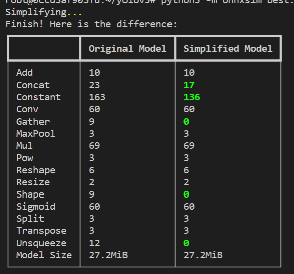
模型查看通过网址输入netron.app查看三个输出：
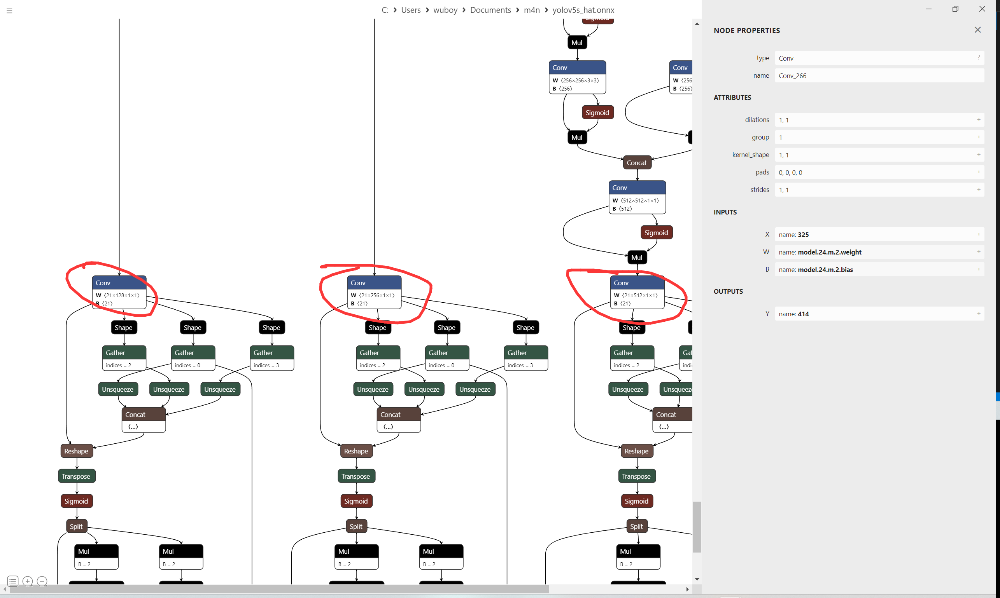
查看官方给的yolov5s.json文件：
{
"model_type": "ONNX",
"npu_mode": "NPU1",
"quant": {
"input_configs": [
{
"tensor_name": "images",
"calibration_dataset": "./dataset/calibration_dataset.tar.gz",
"calibration_size": 4,
"calibration_mean": [0, 0, 0],
"calibration_std": [255.0, 255.0, 255.0]
}
],
"calibration_method": "MinMax",
"precision_analysis": false
},
"input_processors": [
{
"tensor_name": "images",
"tensor_format": "BGR",
"src_format": "BGR",
"src_dtype": "U8",
"src_layout": "NHWC"
}
],
"output_processors": [
{
"tensor_name": "326",
"dst_perm": [0, 2, 3, 1]
},
{
"tensor_name": "370",
"dst_perm": [0, 2, 3, 1]
},
{
"tensor_name": "414",
"dst_perm": [0, 2, 3, 1]
}
],
"compiler": {
"check": 0
}
}
output_processors给的326，370，414
根据秋水大佬博客的导出子图文件修改得到适应pulsar2工具的onnx文件：
import onnx
input_path = "yolov5s_hat-sim.onnx"
output_path = "yolov5s_hat_sub.onnx"
input_names = ["images"]
output_names = ["326","370","414"]
onnx.utils.extract_model(input_path, output_path, input_names, output_names)
问题记录：
（1）导出子图很关键
由于之前对深度学习知识了解很少，才知道子图，如果执行使用yolov5s_hat_sub.onnx，在Pulsar2工具中进行量化的话，会生成axmodel但是是无法执行了，通过o0圏圏蟲0o大佬给的模型对比网络结构和秋水大佬的ax620a部署yolov5博客才明白自己问题出现在哪里
如果你没处理导出子图得到的图会是这样：
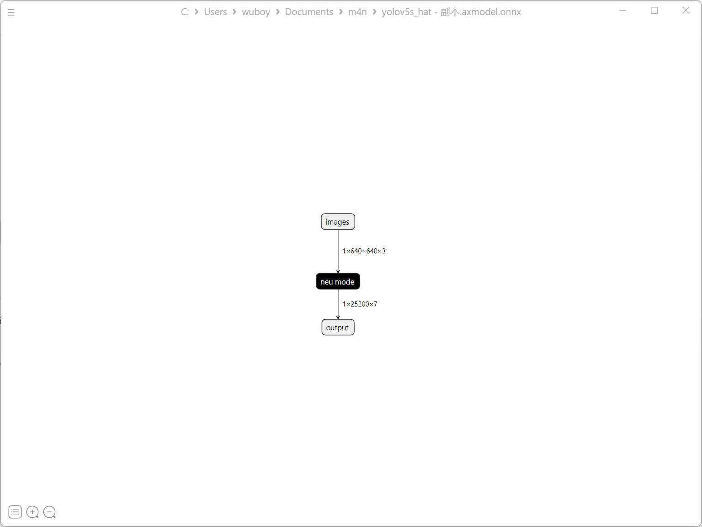
正确量化后的yolov5s图：
官方的yolov5s模型：
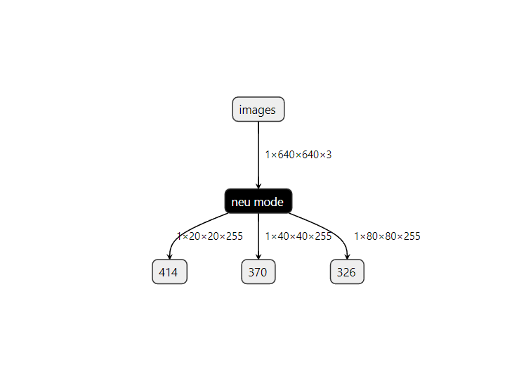
博主的正确的axmodel：
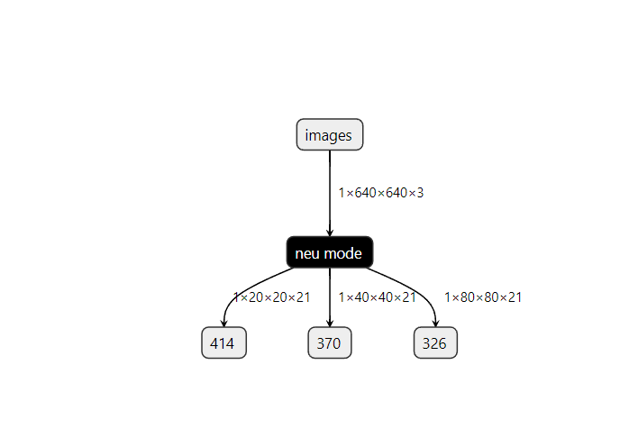
其中数字不同255和21的原因（秋水大佬博客有讲）：
该数字为（模型训练的类别+5）*3，博主类别为2类，所以就是21
模型转化（关键）
安装docker环境（已安装过的可以跳过）
安装docker依赖的基础软件
sudo apt-get update
sudo apt-get install apt-transport-https ca-certificates curl gnupg-agent software-properties-common
添加官方来源
curl -fsSL https://download.docker.com/linux/ubuntu/gpg | sudo apt-key add -
sudo add-apt-repository "deb [arch=amd64] https://download.docker.com/linux/ubuntu $(lsb_release -cs) stable"
安装 docker
sudo apt-get update
sudo apt-get install docker-ce docker-ce-cli containerd.io
pulsar2工具模型转化以及仿真运行
- 下载pulsar2工具（博主使用的是1.9）
quick_start_example 文件夹
其中文件如下：
config dataset model output pulsar2-run-helper
./dataset/calibration_data.tar：添加了数据集的四张照片
config文件：
{
"model_type": "ONNX",
"npu_mode": "NPU1",
"quant": {
"input_configs": [
{
"tensor_name": "images",
"calibration_dataset": "./dataset/calibration_data.tar",
"calibration_size": 4,
"calibration_mean": [0, 0, 0],
"calibration_std": [255.0, 255.0, 255.0]
}
],
"calibration_method": "MinMax",
"precision_analysis": false
},
"input_processors": [
{
"tensor_name": "images",
"tensor_format": "BGR",
"src_format": "BGR",
"src_dtype": "U8",
"src_layout": "NHWC"
}
],
"output_processors": [
{
"tensor_name": "326",
"dst_perm": [0, 2, 3, 1]
},
{
"tensor_name": "370",
"dst_perm": [0, 2, 3, 1]
},
{
"tensor_name": "414",
"dst_perm": [0, 2, 3, 1]
}
],
"compiler": {
"check": 0
}
}
（博主是直接就是root用户，如果不是root用户记得加sudo）
root@LAPTOP-U638FQQS:~# docker load -i ax_pulsar2_1.9_enc.tar.gz
root@LAPTOP-U638FQQS:~# docker images -a
REPOSITORY TAG IMAGE ID CREATED SIZE
hhb4tools/rv_debian_build 1.3 08f478d17c34 7 weeks ago 2.16GB
pulsar2 1.9_enc 641ba18a8da3 2 months ago 3.46GB
hhb4tools/hhb 2.4.5 58df969ae05a 3 months ago 8.16GB
hhb4tools/rv_ub20_build 1.4 a65456ded4f0 6 months ago 5.11GB
hhb4tools/march-user-static 1.0 d9efab34da5e 7 months ago 301MB
riscv64/ubuntu 22.04 8b55084b9c02 11 months ago 61.6MB
riscv64/ubuntu 21.04 d0b60ed75c22 21 months ago 60.3MB
root@LAPTOP-U638FQQS:~#docker run -it --net host --rm -v $PWD:/data pulsar2:1.9_enc
root@1657ec5355e2:/data# pulsar2 version
version: 1.9
commit: c62d0b64
root@1657ec5355e2:/data#
- 编译执行
以 yolov5s_hat_sub.onnx 为例, 执行如下 pulsar2 build 命令编译生成 compiled.axmodel:
pulsar2 build --input model/yolov5s_hat_sub.onnx --output_dir output --config config/yolov5s_config.json
博主输出信息：
root@1657ec5355e2:/data# pulsar2 build --input model/yolov5s_hat_sub.onnx --output_dir output --config config/yolov5s_config.json
2023-11-16 17:49:21.238 | WARNING | yamain.command.build:fill_default:320 - ignore images csc config because of src_format is AutoColorSpace or src_format and tensor_format are the same
Building onnx ━━━━━━━━━━━━━━━━━━━━━━━━━━━━━━━━━━━━━━━━ 100% 0:00:00
2023-11-16 17:49:22.486 | INFO | yamain.command.build:build:444 - save optimized onnx to [output/frontend/optimized.onnx]
2023-11-16 17:49:22.489 | INFO | yamain.common.util:extract_archive:21 - extract [dataset/calibration_data.tar] to [output/quant/dataset/images]...
Quant Config Table
┏━━━━━━━━┳━━━━━━━━━━━━━━━━━━┳━━━━━━━━━━━━━━━━━━━┳━━━━━━━━━━━━━┳━━━━━━━━━━━━━━━┳━━━━━━━━━━━━━━━━━┳━━━━━━━━━━━━━━━━━━━━━━━┓
┃ Input ┃ Shape ┃ Dataset Directory ┃ Data Format ┃ Tensor Format ┃ Mean ┃ Std ┃
┡━━━━━━━━╇━━━━━━━━━━━━━━━━━━╇━━━━━━━━━━━━━━━━━━━╇━━━━━━━━━━━━━╇━━━━━━━━━━━━━━━╇━━━━━━━━━━━━━━━━━╇━━━━━━━━━━━━━━━━━━━━━━━┩
│ images │ [1, 3, 640, 640] │ images │ Image │ BGR │ [0.0, 0.0, 0.0] │ [255.0, 255.0, 255.0] │
└────────┴──────────────────┴───────────────────┴─────────────┴───────────────┴─────────────────┴───────────────────────┘
Transformer optimize level: 0
4 File(s) Loaded.
[17:49:24] AX LSTM Operation Format Pass Running ... Finished.
[17:49:24] AX Set MixPrecision Pass Running ... Finished.
[17:49:24] AX Refine Operation Config Pass Running ... Finished.
[17:49:24] AX Reset Mul Config Pass Running ... Finished.
[17:49:24] AX Tanh Operation Format Pass Running ... Finished.
[17:49:24] AX Confused Op Refine Pass Running ... Finished.
[17:49:24] AX Quantization Fusion Pass Running ... Finished.
[17:49:24] AX Quantization Simplify Pass Running ... Finished.
[17:49:24] AX Parameter Quantization Pass Running ... Finished.
Calibration Progress(Phase 1): 100%|███████████████████████████████████████████████████████████████████████████████| 4/4 [00:01<00:00, 2.16it/s]
Finished.
[17:49:26] AX Passive Parameter Quantization Running ... Finished.
[17:49:26] AX Parameter Baking Pass Running ... Finished.
[17:49:26] AX Refine Int Parameter Pass Running ... Finished.
[17:49:26] AX Refine Weight Parameter Pass Running ... Finished.
--------- Network Snapshot ---------
Num of Op: [142]
Num of Quantized Op: [142]
Num of Variable: [267]
Num of Quantized Var: [267]
------- Quantization Snapshot ------
Num of Quant Config: [430]
BAKED: [60]
OVERLAPPED: [168]
ACTIVATED: [138]
SOI: [4]
PASSIVE_BAKED: [60]
Network Quantization Finished.
quant.axmodel export success: output/quant/quant_axmodel.onnx
===>export input/output data to folder: output/quant/debug/test_data_set_0
Building native ━━━━━━━━━━━━━━━━━━━━━━━━━━━━━━━━━━━━━━━━ 100% 0:00:00
2023-11-16 17:49:28.704 | WARNING | yamain.command.load_model:pre_process:454 - preprocess tensor [images]
2023-11-16 17:49:28.704 | INFO | yamain.command.load_model:pre_process:456 - tensor: images, (1, 640, 640, 3), U8
2023-11-16 17:49:28.705 | INFO | yamain.command.load_model:pre_process:456 - op: op:pre_dequant_1, AxDequantizeLinear, {'const_inputs': {'x_zeropoint': array(0, dtype=int32), 'x_scale': array(1., dtype=float32)}, 'output_dtype': <class 'numpy.float32'>, 'quant_method': 0}
2023-11-16 17:49:28.705 | INFO | yamain.command.load_model:pre_process:456 - tensor: tensor:pre_norm_1, (1, 640, 640, 3), FP32
2023-11-16 17:49:28.705 | INFO | yamain.command.load_model:pre_process:456 - op: op:pre_norm_1, AxNormalize, {'dim': 3, 'mean': [0.0, 0.0, 0.0], 'std': [255.0, 255.0, 255.0]}
2023-11-16 17:49:28.705 | INFO | yamain.command.load_model:pre_process:456 - tensor: tensor:pre_transpose_1, (1, 640, 640, 3), FP32
2023-11-16 17:49:28.705 | INFO | yamain.command.load_model:pre_process:456 - op: op:pre_transpose_1, AxTranspose, {'perm': [0, 3, 1, 2]}
2023-11-16 17:49:28.705 | WARNING | yamain.command.load_model:post_process:475 - postprocess tensor [326]
2023-11-16 17:49:28.705 | INFO | yamain.command.load_model:handle_postprocess:473 - op: op:post_transpose_1, AxTranspose
2023-11-16 17:49:28.705 | WARNING | yamain.command.load_model:post_process:475 - postprocess tensor [370]
2023-11-16 17:49:28.706 | INFO | yamain.command.load_model:handle_postprocess:473 - op: op:post_transpose_2, AxTranspose
2023-11-16 17:49:28.706 | WARNING | yamain.command.load_model:post_process:475 - postprocess tensor [414]
2023-11-16 17:49:28.706 | INFO | yamain.command.load_model:handle_postprocess:473 - op: op:post_transpose_3, AxTranspose
tiling op... ━━━━━━━━━━━━━━━━━━━━━━━━━━━━━━━━━━━━━━━━━━━━━━━━━━━━━━━━━━━━━━━━━━━━━━━━━━━━━━━━━━━━━━━━━━━━━━━━━━━━━━━━━━━━━━━━━━ 241/241 0:00:00
new_ddr_tensor = []
<frozen backend.ax650npu.oprimpl.normalize>:186: RuntimeWarning: divide by zero encountered in divide
<frozen backend.ax650npu.oprimpl.normalize>:187: RuntimeWarning: invalid value encountered in divide
build op... ━━━━━━━━━━━━━━━━━━━━━━━━━━━━━━━━━━━━━━━━━━━━━━━━━━━━━━━━━━━━━━━━━━━━━━━━━━━━━━━━━━━━━━━━━━━━━━━━━━━━━━━━━━━━━━━━━ 1177/1177 0:00:04
add ddr swap... ━━━━━━━━━━━━━━━━━━━━━━━━━━━━━━━━━━━━━━━━━━━━━━━━━━━━━━━━━━━━━━━━━━━━━━━━━━━━━━━━━━━━━━━━━━━━━━━━━━━━━━━━━━━━━ 1141/1141 0:00:00
calc input dependencies... ━━━━━━━━━━━━━━━━━━━━━━━━━━━━━━━━━━━━━━━━━━━━━━━━━━━━━━━━━━━━━━━━━━━━━━━━━━━━━━━━━━━━━━━━━━━━━━━━━━ 1437/1437 0:00:00
calc output dependencies... ━━━━━━━━━━━━━━━━━━━━━━━━━━━━━━━━━━━━━━━━━━━━━━━━━━━━━━━━━━━━━━━━━━━━━━━━━━━━━━━━━━━━━━━━━━━━━━━━━ 1437/1437 0:00:00
assign eu heuristic ━━━━━━━━━━━━━━━━━━━━━━━━━━━━━━━━━━━━━━━━━━━━━━━━━━━━━━━━━━━━━━━━━━━━━━━━━━━━━━━━━━━━━━━━━━━━━━━━━━━━━━━━━ 1437/1437 0:00:00
assign eu onepass ━━━━━━━━━━━━━━━━━━━━━━━━━━━━━━━━━━━━━━━━━━━━━━━━━━━━━━━━━━━━━━━━━━━━━━━━━━━━━━━━━━━━━━━━━━━━━━━━━━━━━━━━━━━ 1437/1437 0:00:00
assign eu greedy ━━━━━━━━━━━━━━━━━━━━━━━━━━━━━━━━━━━━━━━━━━━━━━━━━━━━━━━━━━━━━━━━━━━━━━━━━━━━━━━━━━━━━━━━━━━━━━━━━━━━━━━━━━━━ 1437/1437 0:00:00
2023-11-16 17:49:34.720 | INFO | yasched.test_onepass:results2model:2004 - max_cycle = 4,846,471
2023-11-16 17:49:35.349 | INFO | yamain.command.build:compile_npu_subgraph:1076 - QuantAxModel macs: 7,881,318,400
2023-11-16 17:49:35.352 | INFO | yamain.command.build:compile_npu_subgraph:1084 - use random data as gt input: images, uint8, (1, 640, 640, 3)
2023-11-16 17:49:38.687 | INFO | yamain.command.build:compile_ptq_model:1003 - fuse 1 subgraph(s)
root@1657ec5355e2:/data#
- 模型仿真运行
cp output/compiled.axmodel pulsar2-run-helper/models/yolov5s_hat.axmodel
输入数据准备
python3 cli_detection.py --pre_processing --image_path sim_images/000032.jpg --axmodel_path models/yolov5s_hat.axmodel --intermediate_path sim_inputs/0
输出信息：
root@1657ec5355e2:/data/pulsar2-run-helper# python3 cli_detection.py --pre_processing --image_path sim_images/000032.jpg --axmodel_path models/yolov5s_hat.axmodel --intermediate_path sim_inputs/0
[I] Write [images] to 'sim_inputs/0/images.bin' successfully.
仿真模型推理
pulsar2 run --model models/yolov5s_hat.axmodel --input_dir sim_inputs --output_dir sim_outputs --list list.txt
输出信息：
root@1657ec5355e2:/data/pulsar2-run-helper# pulsar2 run --model models/yolov5s_hat.axmodel --input_dir sim_inputs --output_dir sim_outputs --list list.txt
Building native ━━━━━━━━━━━━━━━━━━━━━━━━━━━━━━━━━━━━━━━━ 100% 0:00:00
>>> [0] start
write [326] to [sim_outputs/0/326.bin] successfully
write [370] to [sim_outputs/0/370.bin] successfully
write [414] to [sim_outputs/0/414.bin] successfully
>>> [0] finish
输出数据处理（记得指定图片路径）
python3 cli_detection.py --post_processing --image_path sim_images/000032.jpg --axmodel_path models/yolov5s_hat.axmodel --intermediate_path sim_outputs/0
输出信息：
root@1657ec5355e2:/data/pulsar2-run-helper# python3 cli_detection.py --post_processing --image_path sim_images/000032.jpg --axmodel_path models/yolov5s_hat.axmodel --intermediate_path sim_outputs/0
[I] Number of detected objects: 7
[I] 0: 94.59%, [972, 224, 1089, 345]
[I] 0: 94.56%, [886, 222, 970, 327]
[I] 0: 94.12%, [1141, 145, 1262, 281]
[I] 0: 93.96%, [487, 249, 571, 370]
[I] 0: 93.94%, [331, 201, 430, 341]
[I] 0: 93.27%, [186, 192, 302, 351]
[I] 0: 62.17%, [607, 233, 692, 338]
root@1657ec5355e2:/data/pulsar2-run-helper#
具体工具文档如下：
pulsar2工具文档
开发板运行
开发板镜像为1.27版本，采用本地编译
下载源码：
git clone https://github.com/AXERA-TECH/ax-samples.git
修改ax_yolov5s_steps.cc文件中：
修改classname标签
const char* CLASS_NAMES[] = {
"person", "hat"};
generate_proposals_yolov5函数指定classnum数量为2
for (uint32_t i = 0; i < io_info->nOutputSize; ++i)
{
auto& output = io_data->pOutputs[i];
auto& info = io_info->pOutputs[i];
auto ptr = (float*)output.pVirAddr;
int32_t stride = (1 << i) * 8;
detection::generate_proposals_yolov5(stride, ptr, PROB_THRESHOLD, proposals, input_w, input_h, ANCHORS, prob_threshold_u_sigmoid,2);
}
修改的原因是它默认为80，不然会报错下面信息：
root@maixbox:/home/ax-samples/build/install/ax650# ./ax_yolov5s -m yolov5s_hat.axmodel -i 000032.jpg
--------------------------------------
model file : yolov5s_hat.axmodel
image file : 000032.jpg
img_h, img_w : 640 640
--------------------------------------
WARN,Func(__is_valid_file),NOT find file = '/etc/ax_syslog.conf'
ERROR,Func(__syslog_parma_cfg_get), NOT find = '/etc/ax_syslog.conf'
Engine creating handle is done.
Engine creating context is done.
Engine get io info is done.
Engine alloc io is done.
Engine push input is done.
--------------------------------------
Segmentation fault
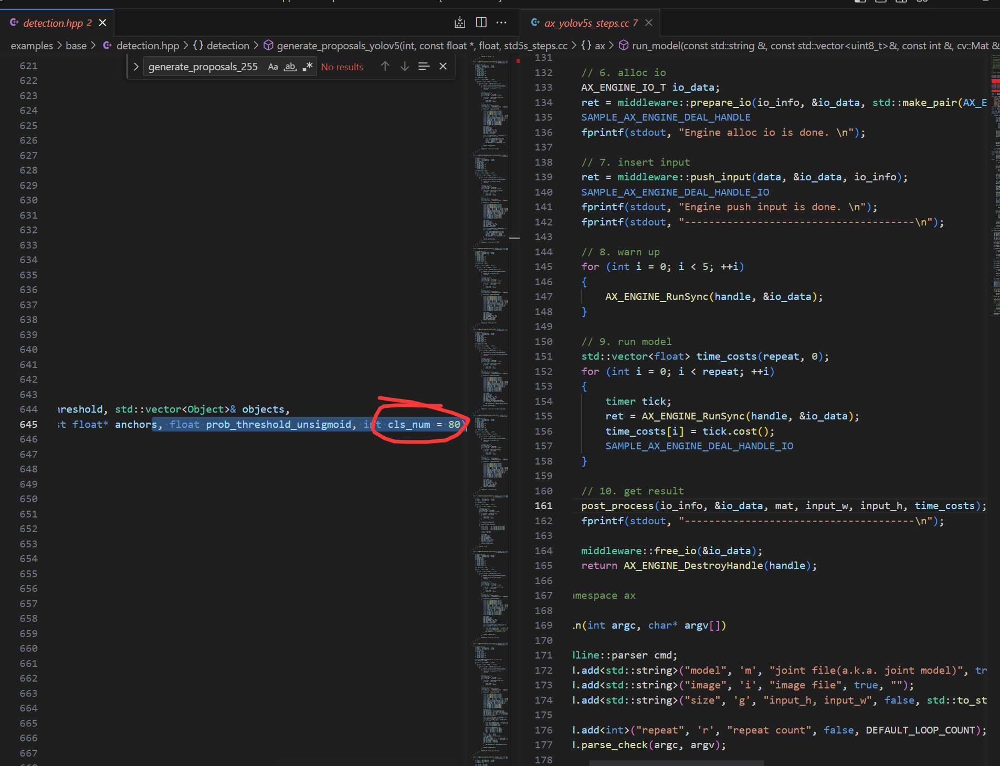
cd ax-samples
mkdir build && cd build
cmake -DBSP_MSP_DIR=/soc/ -DAXERA_TARGET_CHIP=ax650 ..
make -j6
make install
编译完成后，生成的可执行示例存放在 ax-samples/build/install/ax650/ 路径下：
ax-samples/build$ tree install
install
└── ax650
├── ax_classification
├── ax_detr
├── ax_dinov2
├── ax_glpdepth
├── ax_hrnet
├── ax_imgproc
├── ax_pfld
├── ax_pp_humanseg
├── ax_pp_liteseg_stdc2_cityscapes
├── ax_pp_ocr_rec
├── ax_pp_person_attribute
├── ax_pp_vehicle_attribute
├── ax_ppyoloe
├── ax_ppyoloe_obj365
├── ax_realesrgan
├── ax_rtmdet
├── ax_scrfd
├── ax_segformer
├── ax_simcc_pose
├── ax_yolo_nas
├── ax_yolov5_face
├── ax_yolov5s
├── ax_yolov5s_seg
├── ax_yolov6
├── ax_yolov7
├── ax_yolov7_tiny_face
├── ax_yolov8
├── ax_yolov8_pose
└── ax_yolox
讲axmodel模型放在可执行文件下和测试图片：
root@maixbox:/home/ax-samples/build/install/ax650# ./ax_yolov5s -m yolov5s_hat.axmodel -i 000032.jpg
--------------------------------------
model file : yolov5s_hat.axmodel
image file : 000032.jpg
img_h, img_w : 640 640
--------------------------------------
WARN,Func(__is_valid_file),NOT find file = '/etc/ax_syslog.conf'
ERROR,Func(__syslog_parma_cfg_get), NOT find = '/etc/ax_syslog.conf'
Engine creating handle is done.
Engine creating context is done.
Engine get io info is done.
Engine alloc io is done.
Engine push input is done.
--------------------------------------
post process cost time:0.42 ms
--------------------------------------
Repeat 1 times, avg time 6.15 ms, max_time 6.15 ms, min_time 6.15 ms
--------------------------------------
detection num: 7
0: 95%, [ 981, 221, 1080, 342], person
0: 95%, [ 332, 201, 431, 341], person
0: 95%, [ 886, 222, 970, 327], person
0: 94%, [1141, 140, 1262, 290], person
0: 94%, [ 187, 197, 300, 347], person
0: 94%, [ 487, 252, 571, 373], person
0: 91%, [ 605, 232, 689, 337], person
--------------------------------------
感谢
感谢o0圏圏蟲0o,无事闲来，梦醒时分，N/A，秋水等大佬的帮助
部署yolov8s 自定义模型
本博客将向你展示零基础一步步的部署好自己的yolov8s模型（博主展示的是自己训练的手写数字识别模型），本博客教你从训练模型到转化成利于Pulsar2 工具量化部署到开发板上
训练自己的YOLOv8s模型
准备自定义数据集
数据集结构可以不像下面一样，这个只是记录当前测试适合的数据集目录结构，常见结构也有VOC结构，所以看个人喜好
数据集目录结构如下：
└─yolov8s_datasets: 自定义数据集
├─test
│ └─images 图片文件
│ └─label 标签文件
├─train
│ └─images 图片文件
│ └─label 标签文件
├─valid
│ └─images 图片文件
│ └─label 标签文件
├─data.yaml 路径和类别
本博客的data.yaml内容如下：
train: ../train/images
val: ../valid/images
test: ../test/images
nc: 10
names: ['0', '1', '2', '3', '4', '5', '6', '7', '8', '9']
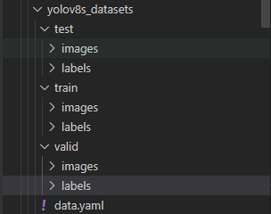
YOLOv8训练环境搭建
- 配置环境
# Clone the ultralytics repository
git clone https://github.com/ultralytics/ultralytics
# Navigate to the cloned directory
cd ultralytics
# Install the package in editable mode for development
pip install -e .
- 下载预训练权重
https://github.com/ultralytics/assets/releases/download/v0.0.0/yolov8s.pt
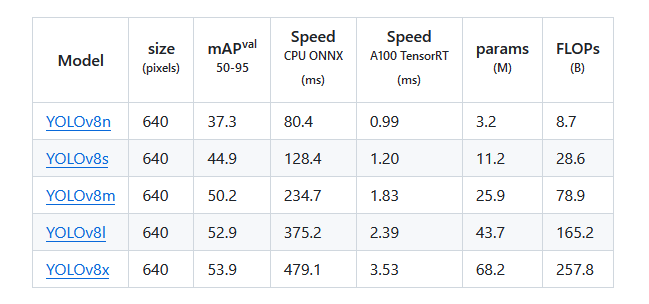
- 测试环境
model路径可以指定绝对路径，source也可以指定图片的绝对路径
yolo predict model=yolov8n.pt source='https://ultralytics.com/images/bus.jpg'
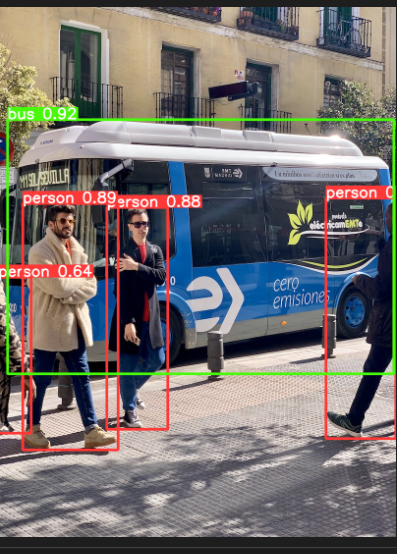
训练自己的YOLOv8s模型
- 训练模型（官方有两种方式一种是使用CLI命令，另一种是使用PYTHON命令）
我比较喜欢训练用PYTHON命令，测试用CLI命令吗，看个人喜好
YOLOv8官方PYTHON的用法
YOLOv8官方CLI的用法
cd ultralytics
touch my_train.py
将下面内容填写到py文件
from ultralytics import YOLO
model = YOLO('/root/ultralytics/yolov8s.pt')
results = model.train(data='/root/data1/wxw/yolov8s_datasets/data.yaml',epochs=80,amp=False,batch=16,val=True,device=0)
在此路径下执行python3 my_train.py
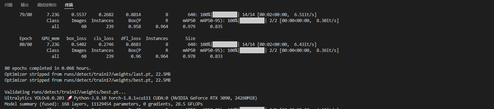
- 测试模型
yolo predict model=/root/ultralytics/runs/detect/train17/weights/best.pt source='/root/ultralytics/ultralytics/assets/www.png' imgsz=640
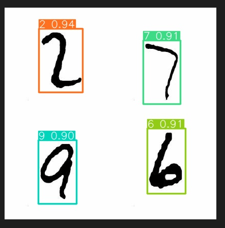
模型部署和实机测试
前期准备
- 导出适宜pular2的onnx模型
（1）导出onnx模型（记得加上opset=11）
yolo task=detect mode=export model=/root/ultralytics/runs/detect/train17/weights/best.pt format=onnx opset=11
（2）onnx模型onnxsim化
python3 -m onnxsim best.onnx yolov8s_number_sim.onnx
终端输出信息：
Simplifying...
Finish! Here is the difference:
┏━━━━━━━━━━━━┳━━━━━━━━━━━━━━━━┳━━━━━━━━━━━━━━━━━━┓
┃ ┃ Original Model ┃ Simplified Model ┃
┡━━━━━━━━━━━━╇━━━━━━━━━━━━━━━━╇━━━━━━━━━━━━━━━━━━┩
│ Add │ 9 │ 8 │
│ Concat │ 24 │ 19 │
│ Constant │ 153 │ 139 │
│ Conv │ 64 │ 64 │
│ Div │ 2 │ 1 │
│ Gather │ 4 │ 0 │
│ MaxPool │ 3 │ 3 │
│ Mul │ 60 │ 58 │
│ Reshape │ 5 │ 5 │
│ Resize │ 2 │ 2 │
│ Shape │ 4 │ 0 │
│ Sigmoid │ 58 │ 58 │
│ Slice │ 2 │ 2 │
│ Softmax │ 1 │ 1 │
│ Split │ 9 │ 9 │
│ Sub │ 2 │ 2 │
│ Transpose │ 2 │ 2 │
│ Unsqueeze │ 7 │ 0 │
│ Model Size │ 42.6MiB │ 42.6MiB │
└────────────┴────────────────┴──────────────────┘
（3）获得onnxsim化模型的sub
touch zhuanhuan.py
把下面内容加入进去，记得路径替换为自己模型
import onnx
input_path = "/root/ultralytics/runs/detect/train17/weights/yolov8s_number_sim.onnx"
output_path = "yolov8s_number_sim_sub.onnx"
input_names = ["images"]
output_names = ["400","433"]
onnx.utils.extract_model(input_path, output_path, input_names, output_names)
得到模型如下图：
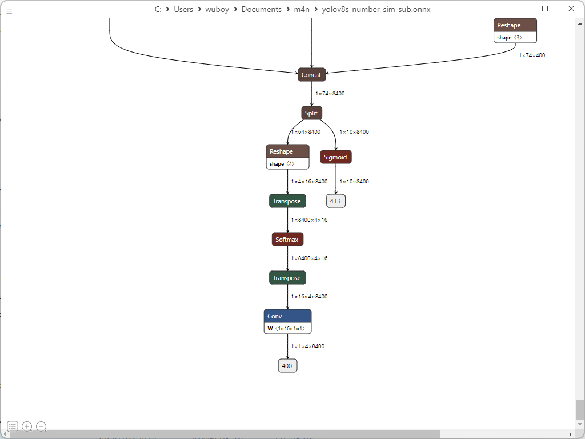
- 为模型量化部署的data
└─data:
├─config
│ └─yolov8s_config_b1.json
├─dataset
│ └─calibration_data.tar 四张数据集照片
├─model
│ └─yolov8s_number_sim_sub.onnx
├─pulsar2-run-helper
其中yolov8s_config_b1.json文件配置如下：
{
"model_type": "ONNX",
"npu_mode": "NPU1",
"quant": {
"input_configs": [
{
"tensor_name": "images",
"calibration_dataset": "./dataset/calibration_data.tar",
"calibration_size": 4,
"calibration_mean": [0, 0, 0],
"calibration_std": [255.0, 255.0, 255.0]
}
],
"calibration_method": "MinMax",
"precision_analysis": true,
"precision_analysis_method":"EndToEnd"
},
"input_processors": [
{
"tensor_name": "images",
"tensor_format": "BGR",
"src_format": "BGR",
"src_dtype": "U8",
"src_layout": "NHWC"
}
],
"output_processors": [
{
"tensor_name": "400",
"dst_perm": [0, 1, 3, 2]
},
{
"tensor_name": "433",
"dst_perm": [0, 2, 1]
}
],
"compiler": {
"check": 0
}
}
axmodel模型获取
进入docker环境（怎么搭建可以查看yolov5的自定义模型），将data文件拷贝到其中
执行下面命令：
cd data/
pulsar2 build --input model/yolov8s_number_sim_sub.onnx --output_dir output --config config/yolov8s_config_b1.json
终端输出信息：
root@1657ec5355e2:/data# pulsar2 build --input model/yolov8s_number_sim_sub.onnx --output_dir output --config config/yolov8s_config_b1.json
2023-11-24 17:00:31.661 | WARNING | yamain.command.build:fill_default:320 - ignore images csc config because of src_format is AutoColorSpace or src_format and tensor_format are the same
Building onnx ━━━━━━━━━━━━━━━━━━━━━━━━━━━━━━━━━━━━━━━━ 100% 0:00:00
2023-11-24 17:00:33.226 | INFO | yamain.command.build:build:444 - save optimized onnx to [output/frontend/optimized.onnx]
2023-11-24 17:00:33.229 | INFO | yamain.common.util:extract_archive:21 - extract [dataset/calibration_data.tar] to [output/quant/dataset/images]...
Quant Config Table
┏━━━━━━━━┳━━━━━━━━━━━━━━━━━━┳━━━━━━━━━━━━━━━━━━━┳━━━━━━━━━━━━━┳━━━━━━━━━━━━━━━┳━━━━━━━━━━━━━━━━━┳━━━━━━━━━━━━━━━━━━━━━━━┓
┃ Input ┃ Shape ┃ Dataset Directory ┃ Data Format ┃ Tensor Format ┃ Mean ┃ Std ┃
┡━━━━━━━━╇━━━━━━━━━━━━━━━━━━╇━━━━━━━━━━━━━━━━━━━╇━━━━━━━━━━━━━╇━━━━━━━━━━━━━━━╇━━━━━━━━━━━━━━━━━╇━━━━━━━━━━━━━━━━━━━━━━━┩
│ images │ [1, 3, 640, 640] │ images │ Image │ BGR │ [0.0, 0.0, 0.0] │ [255.0, 255.0, 255.0] │
└────────┴──────────────────┴───────────────────┴─────────────┴───────────────┴─────────────────┴───────────────────────┘
Transformer optimize level: 0
4 File(s) Loaded.
[17:00:35] AX LSTM Operation Format Pass Running ... Finished.
[17:00:35] AX Set MixPrecision Pass Running ... Finished.
[17:00:35] AX Refine Operation Config Pass Running ... Finished.
[17:00:35] AX Reset Mul Config Pass Running ... Finished.
[17:00:35] AX Tanh Operation Format Pass Running ... Finished.
[17:00:35] AX Confused Op Refine Pass Running ... Finished.
[17:00:35] AX Quantization Fusion Pass Running ... Finished.
[17:00:35] AX Quantization Simplify Pass Running ... Finished.
[17:00:35] AX Parameter Quantization Pass Running ... Finished.
Calibration Progress(Phase 1): 100%|██████████████████████████████████████████████████████████████████████| 4/4 [00:02<00:00, 1.54it/s]
Finished.
[17:00:38] AX Passive Parameter Quantization Running ... Finished.
[17:00:38] AX Parameter Baking Pass Running ... Finished.
[17:00:38] AX Refine Int Parameter Pass Running ... Finished.
[17:00:39] AX Refine Weight Parameter Pass Running ... Finished.
--------- Network Snapshot ---------
Num of Op: [166]
Num of Quantized Op: [166]
Num of Variable: [320]
Num of Quantized Var: [320]
------- Quantization Snapshot ------
Num of Quant Config: [521]
BAKED: [64]
OVERLAPPED: [230]
ACTIVATED: [147]
SOI: [17]
PASSIVE_BAKED: [63]
Network Quantization Finished.
quant.axmodel export success: output/quant/quant_axmodel.onnx
===>export per layer debug_data(float data) to folder: output/quant/debug/float
Writing npy... ━━━━━━━━━━━━━━━━━━━━━━━━━━━━━━━━━━━━━━━━ 100% 0:00:00
===>export input/output data to folder: output/quant/debug/test_data_set_0
Building native ━━━━━━━━━━━━━━━━━━━━━━━━━━━━━━━━━━━━━━━━ 100% 0:00:00
Quant Precision Table【EndToEnd Reference】
┏━━━━━━━━━━━━━━━━━┳━━━━━━━━━━━━━━━━━━━━┳━━━━━━━━━━━━━━━┳━━━━━━━━━━━┳━━━━━━━━━━━━━━━━━━━┳━━━━━━━━━━━━━━━━━━━━┓
┃ Operator ┃ Type ┃ Output Tensor ┃ Data Type ┃ Shape ┃ Cosin Distance ┃
┡━━━━━━━━━━━━━━━━━╇━━━━━━━━━━━━━━━━━━━━╇━━━━━━━━━━━━━━━╇━━━━━━━━━━━╇━━━━━━━━━━━━━━━━━━━╇━━━━━━━━━━━━━━━━━━━━┩
│ Conv_0 │ AxQuantizedConv │ 128 │ FP32 │ (1, 32, 320, 320) │ 0.997423529624939 │
├─────────────────┼────────────────────┼───────────────┼───────────┼───────────────────┼────────────────────┤
│ op_29:onnx.Silu │ AxQuantizedSilu │ 130 │ FP32 │ (1, 32, 320, 320) │ 0.9927281141281128 │
├─────────────────┼────────────────────┼───────────────┼───────────┼───────────────────┼────────────────────┤
│ Conv_3 │ AxQuantizedConv │ 131 │ FP32 │ (1, 64, 160, 160) │ 0.9920939207077026 │
├─────────────────┼────────────────────┼───────────────┼───────────┼───────────────────┼────────────────────┤
│ op_43:onnx.Silu │ AxQuantizedSilu │ 133 │ FP32 │ (1, 64, 160, 160) │ 0.9900780916213989 │
├─────────────────┼────────────────────┼───────────────┼───────────┼───────────────────┼────────────────────┤
│ Conv_6 │ AxQuantizedConv │ 134 │ FP32 │ (1, 64, 160, 160) │ 0.9906365275382996 │
├─────────────────┼────────────────────┼───────────────┼───────────┼───────────────────┼────────────────────┤
│ op_52:onnx.Silu │ AxQuantizedSilu │ 136 │ FP32 │ (1, 64, 160, 160) │ 0.9852141737937927 │
├─────────────────┼────────────────────┼───────────────┼───────────┼───────────────────┼────────────────────┤
│ Split_9 │ AxSplit │ 137 │ FP32 │ (1, 32, 160, 160) │ 0.9803164601325989 │
├─────────────────┼────────────────────┼───────────────┼───────────┼───────────────────┼────────────────────┤
│ Split_9 │ AxSplit │ 138 │ FP32 │ (1, 32, 160, 160) │ 0.9905278086662292 │
├─────────────────┼────────────────────┼───────────────┼───────────┼───────────────────┼────────────────────┤
│ Conv_10 │ AxQuantizedConv │ 139 │ FP32 │ (1, 32, 160, 160) │ 0.9823276996612549 │
├─────────────────┼────────────────────┼───────────────┼───────────┼───────────────────┼────────────────────┤
│ op_5:onnx.Silu │ AxQuantizedSilu │ 141 │ FP32 │ (1, 32, 160, 160) │ 0.9837850332260132 │
├─────────────────┼────────────────────┼───────────────┼───────────┼───────────────────┼────────────────────┤
│ Conv_13 │ AxQuantizedConv │ 142 │ FP32 │ (1, 32, 160, 160) │ 0.9893827438354492 │
├─────────────────┼────────────────────┼───────────────┼───────────┼───────────────────┼────────────────────┤
│ op_14:onnx.Silu │ AxQuantizedSilu │ 144 │ FP32 │ (1, 32, 160, 160) │ 0.9909690022468567 │
├─────────────────┼────────────────────┼───────────────┼───────────┼───────────────────┼────────────────────┤
│ Add_16 │ AxQuantizedAdd │ 145 │ FP32 │ (1, 32, 160, 160) │ 0.9938862919807434 │
├─────────────────┼────────────────────┼───────────────┼───────────┼───────────────────┼────────────────────┤
│ Concat_17 │ AxQuantizedConcat │ 146 │ FP32 │ (1, 96, 160, 160) │ 0.9908509254455566 │
├─────────────────┼────────────────────┼───────────────┼───────────┼───────────────────┼────────────────────┤
│ Conv_18 │ AxQuantizedConv │ 147 │ FP32 │ (1, 64, 160, 160) │ 0.9462912082672119 │
├─────────────────┼────────────────────┼───────────────┼───────────┼───────────────────┼────────────────────┤
│ op_30:onnx.Silu │ AxQuantizedSilu │ 149 │ FP32 │ (1, 64, 160, 160) │ 0.950251042842865 │
├─────────────────┼────────────────────┼───────────────┼───────────┼───────────────────┼────────────────────┤
│ Conv_21 │ AxQuantizedConv │ 150 │ FP32 │ (1, 128, 80, 80) │ 0.9519447684288025 │
├─────────────────┼────────────────────┼───────────────┼───────────┼───────────────────┼────────────────────┤
│ op_35:onnx.Silu │ AxQuantizedSilu │ 152 │ FP32 │ (1, 128, 80, 80) │ 0.9611063003540039 │
├─────────────────┼────────────────────┼───────────────┼───────────┼───────────────────┼────────────────────┤
│ Conv_24 │ AxQuantizedConv │ 153 │ FP32 │ (1, 128, 80, 80) │ 0.95732182264328 │
├─────────────────┼────────────────────┼───────────────┼───────────┼───────────────────┼────────────────────┤
│ op_36:onnx.Silu │ AxQuantizedSilu │ 155 │ FP32 │ (1, 128, 80, 80) │ 0.9646297097206116 │
├─────────────────┼────────────────────┼───────────────┼───────────┼───────────────────┼────────────────────┤
│ Split_27 │ AxSplit │ 156 │ FP32 │ (1, 64, 80, 80) │ 0.9520685076713562 │
├─────────────────┼────────────────────┼───────────────┼───────────┼───────────────────┼────────────────────┤
│ Split_27 │ AxSplit │ 157 │ FP32 │ (1, 64, 80, 80) │ 0.9791563153266907 │
├─────────────────┼────────────────────┼───────────────┼───────────┼───────────────────┼────────────────────┤
│ Conv_28 │ AxQuantizedConv │ 158 │ FP32 │ (1, 64, 80, 80) │ 0.9838675260543823 │
├─────────────────┼────────────────────┼───────────────┼───────────┼───────────────────┼────────────────────┤
│ op_37:onnx.Silu │ AxQuantizedSilu │ 160 │ FP32 │ (1, 64, 80, 80) │ 0.9839531183242798 │
├─────────────────┼────────────────────┼───────────────┼───────────┼───────────────────┼────────────────────┤
│ Conv_31 │ AxQuantizedConv │ 161 │ FP32 │ (1, 64, 80, 80) │ 0.9883632063865662 │
├─────────────────┼────────────────────┼───────────────┼───────────┼───────────────────┼────────────────────┤
│ op_38:onnx.Silu │ AxQuantizedSilu │ 163 │ FP32 │ (1, 64, 80, 80) │ 0.9865988492965698 │
├─────────────────┼────────────────────┼───────────────┼───────────┼───────────────────┼────────────────────┤
│ Add_34 │ AxQuantizedAdd │ 164 │ FP32 │ (1, 64, 80, 80) │ 0.985512375831604 │
├─────────────────┼────────────────────┼───────────────┼───────────┼───────────────────┼────────────────────┤
│ Conv_35 │ AxQuantizedConv │ 165 │ FP32 │ (1, 64, 80, 80) │ 0.9902355074882507 │
├─────────────────┼────────────────────┼───────────────┼───────────┼───────────────────┼────────────────────┤
│ op_39:onnx.Silu │ AxQuantizedSilu │ 167 │ FP32 │ (1, 64, 80, 80) │ 0.9860387444496155 │
├─────────────────┼────────────────────┼───────────────┼───────────┼───────────────────┼────────────────────┤
│ Conv_38 │ AxQuantizedConv │ 168 │ FP32 │ (1, 64, 80, 80) │ 0.9821805953979492 │
├─────────────────┼────────────────────┼───────────────┼───────────┼───────────────────┼────────────────────┤
│ op_40:onnx.Silu │ AxQuantizedSilu │ 170 │ FP32 │ (1, 64, 80, 80) │ 0.9860064387321472 │
├─────────────────┼────────────────────┼───────────────┼───────────┼───────────────────┼────────────────────┤
│ Add_41 │ AxQuantizedAdd │ 171 │ FP32 │ (1, 64, 80, 80) │ 0.9900265336036682 │
├─────────────────┼────────────────────┼───────────────┼───────────┼───────────────────┼────────────────────┤
│ Concat_42 │ AxQuantizedConcat │ 172 │ FP32 │ (1, 256, 80, 80) │ 0.982897937297821 │
├─────────────────┼────────────────────┼───────────────┼───────────┼───────────────────┼────────────────────┤
│ Conv_43 │ AxQuantizedConv │ 173 │ FP32 │ (1, 128, 80, 80) │ 0.9762859344482422 │
├─────────────────┼────────────────────┼───────────────┼───────────┼───────────────────┼────────────────────┤
│ op_41:onnx.Silu │ AxQuantizedSilu │ 175 │ FP32 │ (1, 128, 80, 80) │ 0.973669707775116 │
├─────────────────┼────────────────────┼───────────────┼───────────┼───────────────────┼────────────────────┤
│ Conv_46 │ AxQuantizedConv │ 176 │ FP32 │ (1, 256, 40, 40) │ 0.9805741906166077 │
├─────────────────┼────────────────────┼───────────────┼───────────┼───────────────────┼────────────────────┤
│ op_42:onnx.Silu │ AxQuantizedSilu │ 178 │ FP32 │ (1, 256, 40, 40) │ 0.9669018983840942 │
├─────────────────┼────────────────────┼───────────────┼───────────┼───────────────────┼────────────────────┤
│ Conv_49 │ AxQuantizedConv │ 179 │ FP32 │ (1, 256, 40, 40) │ 0.974116325378418 │
├─────────────────┼────────────────────┼───────────────┼───────────┼───────────────────┼────────────────────┤
│ op_44:onnx.Silu │ AxQuantizedSilu │ 181 │ FP32 │ (1, 256, 40, 40) │ 0.9633337259292603 │
├─────────────────┼────────────────────┼───────────────┼───────────┼───────────────────┼────────────────────┤
│ Split_52 │ AxSplit │ 182 │ FP32 │ (1, 128, 40, 40) │ 0.9472137689590454 │
├─────────────────┼────────────────────┼───────────────┼───────────┼───────────────────┼────────────────────┤
│ Split_52 │ AxSplit │ 183 │ FP32 │ (1, 128, 40, 40) │ 0.985866904258728 │
├─────────────────┼────────────────────┼───────────────┼───────────┼───────────────────┼────────────────────┤
│ Conv_53 │ AxQuantizedConv │ 184 │ FP32 │ (1, 128, 40, 40) │ 0.9925387501716614 │
├─────────────────┼────────────────────┼───────────────┼───────────┼───────────────────┼────────────────────┤
│ op_45:onnx.Silu │ AxQuantizedSilu │ 186 │ FP32 │ (1, 128, 40, 40) │ 0.9885753989219666 │
├─────────────────┼────────────────────┼───────────────┼───────────┼───────────────────┼────────────────────┤
│ Conv_56 │ AxQuantizedConv │ 187 │ FP32 │ (1, 128, 40, 40) │ 0.9947008490562439 │
├─────────────────┼────────────────────┼───────────────┼───────────┼───────────────────┼────────────────────┤
│ op_46:onnx.Silu │ AxQuantizedSilu │ 189 │ FP32 │ (1, 128, 40, 40) │ 0.9901566505432129 │
├─────────────────┼────────────────────┼───────────────┼───────────┼───────────────────┼────────────────────┤
│ Add_59 │ AxQuantizedAdd │ 190 │ FP32 │ (1, 128, 40, 40) │ 0.988625705242157 │
├─────────────────┼────────────────────┼───────────────┼───────────┼───────────────────┼────────────────────┤
│ Conv_60 │ AxQuantizedConv │ 191 │ FP32 │ (1, 128, 40, 40) │ 0.9962781667709351 │
├─────────────────┼────────────────────┼───────────────┼───────────┼───────────────────┼────────────────────┤
│ op_47:onnx.Silu │ AxQuantizedSilu │ 193 │ FP32 │ (1, 128, 40, 40) │ 0.9916768670082092 │
├─────────────────┼────────────────────┼───────────────┼───────────┼───────────────────┼────────────────────┤
│ Conv_63 │ AxQuantizedConv │ 194 │ FP32 │ (1, 128, 40, 40) │ 0.9938035607337952 │
├─────────────────┼────────────────────┼───────────────┼───────────┼───────────────────┼────────────────────┤
│ op_48:onnx.Silu │ AxQuantizedSilu │ 196 │ FP32 │ (1, 128, 40, 40) │ 0.9931269288063049 │
├─────────────────┼────────────────────┼───────────────┼───────────┼───────────────────┼────────────────────┤
│ Add_66 │ AxQuantizedAdd │ 197 │ FP32 │ (1, 128, 40, 40) │ 0.9921359419822693 │
├─────────────────┼────────────────────┼───────────────┼───────────┼───────────────────┼────────────────────┤
│ Concat_67 │ AxQuantizedConcat │ 198 │ FP32 │ (1, 512, 40, 40) │ 0.9850411415100098 │
├─────────────────┼────────────────────┼───────────────┼───────────┼───────────────────┼────────────────────┤
│ Conv_68 │ AxQuantizedConv │ 199 │ FP32 │ (1, 256, 40, 40) │ 0.993002712726593 │
├─────────────────┼────────────────────┼───────────────┼───────────┼───────────────────┼────────────────────┤
│ op_49:onnx.Silu │ AxQuantizedSilu │ 201 │ FP32 │ (1, 256, 40, 40) │ 0.9870186448097229 │
├─────────────────┼────────────────────┼───────────────┼───────────┼───────────────────┼────────────────────┤
│ Conv_71 │ AxQuantizedConv │ 202 │ FP32 │ (1, 512, 20, 20) │ 0.9940688610076904 │
├─────────────────┼────────────────────┼───────────────┼───────────┼───────────────────┼────────────────────┤
│ op_50:onnx.Silu │ AxQuantizedSilu │ 204 │ FP32 │ (1, 512, 20, 20) │ 0.9908106923103333 │
├─────────────────┼────────────────────┼───────────────┼───────────┼───────────────────┼────────────────────┤
│ Conv_74 │ AxQuantizedConv │ 205 │ FP32 │ (1, 512, 20, 20) │ 0.9955147504806519 │
├─────────────────┼────────────────────┼───────────────┼───────────┼───────────────────┼────────────────────┤
│ op_51:onnx.Silu │ AxQuantizedSilu │ 207 │ FP32 │ (1, 512, 20, 20) │ 0.993266224861145 │
├─────────────────┼────────────────────┼───────────────┼───────────┼───────────────────┼────────────────────┤
│ Split_77 │ AxSplit │ 208 │ FP32 │ (1, 256, 20, 20) │ 0.9926754832267761 │
├─────────────────┼────────────────────┼───────────────┼───────────┼───────────────────┼────────────────────┤
│ Split_77 │ AxSplit │ 209 │ FP32 │ (1, 256, 20, 20) │ 0.9949012398719788 │
├─────────────────┼────────────────────┼───────────────┼───────────┼───────────────────┼────────────────────┤
│ Conv_78 │ AxQuantizedConv │ 210 │ FP32 │ (1, 256, 20, 20) │ 0.9967618584632874 │
├─────────────────┼────────────────────┼───────────────┼───────────┼───────────────────┼────────────────────┤
│ op_53:onnx.Silu │ AxQuantizedSilu │ 212 │ FP32 │ (1, 256, 20, 20) │ 0.9936745166778564 │
├─────────────────┼────────────────────┼───────────────┼───────────┼───────────────────┼────────────────────┤
│ Conv_81 │ AxQuantizedConv │ 213 │ FP32 │ (1, 256, 20, 20) │ 0.9948074221611023 │
├─────────────────┼────────────────────┼───────────────┼───────────┼───────────────────┼────────────────────┤
│ op_54:onnx.Silu │ AxQuantizedSilu │ 215 │ FP32 │ (1, 256, 20, 20) │ 0.9930222630500793 │
├─────────────────┼────────────────────┼───────────────┼───────────┼───────────────────┼────────────────────┤
│ Add_84 │ AxQuantizedAdd │ 216 │ FP32 │ (1, 256, 20, 20) │ 0.9927186965942383 │
├─────────────────┼────────────────────┼───────────────┼───────────┼───────────────────┼────────────────────┤
│ Concat_85 │ AxQuantizedConcat │ 217 │ FP32 │ (1, 768, 20, 20) │ 0.9923632144927979 │
├─────────────────┼────────────────────┼───────────────┼───────────┼───────────────────┼────────────────────┤
│ Conv_86 │ AxQuantizedConv │ 218 │ FP32 │ (1, 512, 20, 20) │ 0.9958001971244812 │
├─────────────────┼────────────────────┼───────────────┼───────────┼───────────────────┼────────────────────┤
│ op_55:onnx.Silu │ AxQuantizedSilu │ 220 │ FP32 │ (1, 512, 20, 20) │ 0.9927506446838379 │
├─────────────────┼────────────────────┼───────────────┼───────────┼───────────────────┼────────────────────┤
│ Conv_89 │ AxQuantizedConv │ 221 │ FP32 │ (1, 256, 20, 20) │ 0.9961010217666626 │
├─────────────────┼────────────────────┼───────────────┼───────────┼───────────────────┼────────────────────┤
│ op_56:onnx.Silu │ AxQuantizedSilu │ 223 │ FP32 │ (1, 256, 20, 20) │ 0.9958807229995728 │
├─────────────────┼────────────────────┼───────────────┼───────────┼───────────────────┼────────────────────┤
│ MaxPool_92 │ AxMaxPool │ 224 │ FP32 │ (1, 256, 20, 20) │ 0.9983914494514465 │
├─────────────────┼────────────────────┼───────────────┼───────────┼───────────────────┼────────────────────┤
│ MaxPool_93 │ AxMaxPool │ 225 │ FP32 │ (1, 256, 20, 20) │ 0.9990320801734924 │
├─────────────────┼────────────────────┼───────────────┼───────────┼───────────────────┼────────────────────┤
│ MaxPool_94 │ AxMaxPool │ 226 │ FP32 │ (1, 256, 20, 20) │ 0.9992600679397583 │
├─────────────────┼────────────────────┼───────────────┼───────────┼───────────────────┼────────────────────┤
│ Concat_95 │ AxConcat │ 227 │ FP32 │ (1, 1024, 20, 20) │ 0.9989012479782104 │
├─────────────────┼────────────────────┼───────────────┼───────────┼───────────────────┼────────────────────┤
│ Conv_96 │ AxQuantizedConv │ 228 │ FP32 │ (1, 512, 20, 20) │ 0.9985116720199585 │
├─────────────────┼────────────────────┼───────────────┼───────────┼───────────────────┼────────────────────┤
│ op_57:onnx.Silu │ AxQuantizedSilu │ 230 │ FP32 │ (1, 512, 20, 20) │ 0.9942172169685364 │
├─────────────────┼────────────────────┼───────────────┼───────────┼───────────────────┼────────────────────┤
│ Resize_100 │ AxResize │ 235 │ FP32 │ (1, 512, 40, 40) │ 0.9942169189453125 │
├─────────────────┼────────────────────┼───────────────┼───────────┼───────────────────┼────────────────────┤
│ Concat_101 │ AxQuantizedConcat │ 236 │ FP32 │ (1, 768, 40, 40) │ 0.990614652633667 │
├─────────────────┼────────────────────┼───────────────┼───────────┼───────────────────┼────────────────────┤
│ Conv_102 │ AxQuantizedConv │ 237 │ FP32 │ (1, 256, 40, 40) │ 0.9945578575134277 │
├─────────────────┼────────────────────┼───────────────┼───────────┼───────────────────┼────────────────────┤
│ op_1:onnx.Silu │ AxQuantizedSilu │ 239 │ FP32 │ (1, 256, 40, 40) │ 0.9886558055877686 │
├─────────────────┼────────────────────┼───────────────┼───────────┼───────────────────┼────────────────────┤
│ Split_105 │ AxSplit │ 240 │ FP32 │ (1, 128, 40, 40) │ 0.9857398867607117 │
├─────────────────┼────────────────────┼───────────────┼───────────┼───────────────────┼────────────────────┤
│ Split_105 │ AxSplit │ 241 │ FP32 │ (1, 128, 40, 40) │ 0.9915053248405457 │
├─────────────────┼────────────────────┼───────────────┼───────────┼───────────────────┼────────────────────┤
│ Conv_106 │ AxQuantizedConv │ 242 │ FP32 │ (1, 128, 40, 40) │ 0.994576096534729 │
├─────────────────┼────────────────────┼───────────────┼───────────┼───────────────────┼────────────────────┤
│ op_2:onnx.Silu │ AxQuantizedSilu │ 244 │ FP32 │ (1, 128, 40, 40) │ 0.9875540137290955 │
├─────────────────┼────────────────────┼───────────────┼───────────┼───────────────────┼────────────────────┤
│ Conv_109 │ AxQuantizedConv │ 245 │ FP32 │ (1, 128, 40, 40) │ 0.9929768443107605 │
├─────────────────┼────────────────────┼───────────────┼───────────┼───────────────────┼────────────────────┤
│ op_3:onnx.Silu │ AxQuantizedSilu │ 247 │ FP32 │ (1, 128, 40, 40) │ 0.9889622330665588 │
├─────────────────┼────────────────────┼───────────────┼───────────┼───────────────────┼────────────────────┤
│ Concat_112 │ AxQuantizedConcat │ 248 │ FP32 │ (1, 384, 40, 40) │ 0.9886360764503479 │
├─────────────────┼────────────────────┼───────────────┼───────────┼───────────────────┼────────────────────┤
│ Conv_113 │ AxQuantizedConv │ 249 │ FP32 │ (1, 256, 40, 40) │ 0.9926217198371887 │
├─────────────────┼────────────────────┼───────────────┼───────────┼───────────────────┼────────────────────┤
│ op_4:onnx.Silu │ AxQuantizedSilu │ 251 │ FP32 │ (1, 256, 40, 40) │ 0.9852688312530518 │
├─────────────────┼────────────────────┼───────────────┼───────────┼───────────────────┼────────────────────┤
│ Resize_117 │ AxResize │ 256 │ FP32 │ (1, 256, 80, 80) │ 0.9852687120437622 │
├─────────────────┼────────────────────┼───────────────┼───────────┼───────────────────┼────────────────────┤
│ Concat_118 │ AxQuantizedConcat │ 257 │ FP32 │ (1, 384, 80, 80) │ 0.9802942872047424 │
├─────────────────┼────────────────────┼───────────────┼───────────┼───────────────────┼────────────────────┤
│ Conv_119 │ AxQuantizedConv │ 258 │ FP32 │ (1, 128, 80, 80) │ 0.9910836815834045 │
├─────────────────┼────────────────────┼───────────────┼───────────┼───────────────────┼────────────────────┤
│ op_6:onnx.Silu │ AxQuantizedSilu │ 260 │ FP32 │ (1, 128, 80, 80) │ 0.9910115599632263 │
├─────────────────┼────────────────────┼───────────────┼───────────┼───────────────────┼────────────────────┤
│ Split_122 │ AxSplit │ 261 │ FP32 │ (1, 64, 80, 80) │ 0.9845921397209167 │
├─────────────────┼────────────────────┼───────────────┼───────────┼───────────────────┼────────────────────┤
│ Split_122 │ AxSplit │ 262 │ FP32 │ (1, 64, 80, 80) │ 0.9941115975379944 │
├─────────────────┼────────────────────┼───────────────┼───────────┼───────────────────┼────────────────────┤
│ Conv_123 │ AxQuantizedConv │ 263 │ FP32 │ (1, 64, 80, 80) │ 0.991513192653656 │
├─────────────────┼────────────────────┼───────────────┼───────────┼───────────────────┼────────────────────┤
│ op_7:onnx.Silu │ AxQuantizedSilu │ 265 │ FP32 │ (1, 64, 80, 80) │ 0.9923253059387207 │
├─────────────────┼────────────────────┼───────────────┼───────────┼───────────────────┼────────────────────┤
│ Conv_126 │ AxQuantizedConv │ 266 │ FP32 │ (1, 64, 80, 80) │ 0.9854940176010132 │
├─────────────────┼────────────────────┼───────────────┼───────────┼───────────────────┼────────────────────┤
│ op_8:onnx.Silu │ AxQuantizedSilu │ 268 │ FP32 │ (1, 64, 80, 80) │ 0.9859618544578552 │
├─────────────────┼────────────────────┼───────────────┼───────────┼───────────────────┼────────────────────┤
│ Concat_129 │ AxQuantizedConcat │ 269 │ FP32 │ (1, 192, 80, 80) │ 0.9889001250267029 │
├─────────────────┼────────────────────┼───────────────┼───────────┼───────────────────┼────────────────────┤
│ Conv_130 │ AxQuantizedConv │ 270 │ FP32 │ (1, 128, 80, 80) │ 0.9906606078147888 │
├─────────────────┼────────────────────┼───────────────┼───────────┼───────────────────┼────────────────────┤
│ op_9:onnx.Silu │ AxQuantizedSilu │ 272 │ FP32 │ (1, 128, 80, 80) │ 0.9892817139625549 │
├─────────────────┼────────────────────┼───────────────┼───────────┼───────────────────┼────────────────────┤
│ Conv_133 │ AxQuantizedConv │ 273 │ FP32 │ (1, 128, 40, 40) │ 0.9838826656341553 │
├─────────────────┼────────────────────┼───────────────┼───────────┼───────────────────┼────────────────────┤
│ Conv_172 │ AxQuantizedConv │ 314 │ FP32 │ (1, 64, 80, 80) │ 0.9849876165390015 │
├─────────────────┼────────────────────┼───────────────┼───────────┼───────────────────┼────────────────────┤
│ Conv_179 │ AxQuantizedConv │ 321 │ FP32 │ (1, 128, 80, 80) │ 0.9861446022987366 │
├─────────────────┼────────────────────┼───────────────┼───────────┼───────────────────┼────────────────────┤
│ op_10:onnx.Silu │ AxQuantizedSilu │ 275 │ FP32 │ (1, 128, 40, 40) │ 0.977114737033844 │
├─────────────────┼────────────────────┼───────────────┼───────────┼───────────────────┼────────────────────┤
│ op_21:onnx.Silu │ AxQuantizedSilu │ 316 │ FP32 │ (1, 64, 80, 80) │ 0.9862261414527893 │
├─────────────────┼────────────────────┼───────────────┼───────────┼───────────────────┼────────────────────┤
│ op_23:onnx.Silu │ AxQuantizedSilu │ 323 │ FP32 │ (1, 128, 80, 80) │ 0.9812053442001343 │
├─────────────────┼────────────────────┼───────────────┼───────────┼───────────────────┼────────────────────┤
│ Concat_136 │ AxQuantizedConcat │ 276 │ FP32 │ (1, 384, 40, 40) │ 0.9808831214904785 │
├─────────────────┼────────────────────┼───────────────┼───────────┼───────────────────┼────────────────────┤
│ Conv_175 │ AxQuantizedConv │ 317 │ FP32 │ (1, 64, 80, 80) │ 0.9858677387237549 │
├─────────────────┼────────────────────┼───────────────┼───────────┼───────────────────┼────────────────────┤
│ Conv_182 │ AxQuantizedConv │ 324 │ FP32 │ (1, 128, 80, 80) │ 0.9869458079338074 │
├─────────────────┼────────────────────┼───────────────┼───────────┼───────────────────┼────────────────────┤
│ Conv_137 │ AxQuantizedConv │ 277 │ FP32 │ (1, 256, 40, 40) │ 0.9876588582992554 │
├─────────────────┼────────────────────┼───────────────┼───────────┼───────────────────┼────────────────────┤
│ op_22:onnx.Silu │ AxQuantizedSilu │ 319 │ FP32 │ (1, 64, 80, 80) │ 0.9876548647880554 │
├─────────────────┼────────────────────┼───────────────┼───────────┼───────────────────┼────────────────────┤
│ op_24:onnx.Silu │ AxQuantizedSilu │ 326 │ FP32 │ (1, 128, 80, 80) │ 0.9867691397666931 │
├─────────────────┼────────────────────┼───────────────┼───────────┼───────────────────┼────────────────────┤
│ op_11:onnx.Silu │ AxQuantizedSilu │ 279 │ FP32 │ (1, 256, 40, 40) │ 0.9794371724128723 │
├─────────────────┼────────────────────┼───────────────┼───────────┼───────────────────┼────────────────────┤
│ Conv_178 │ AxQuantizedConv │ 320 │ FP32 │ (1, 64, 80, 80) │ 0.9962972402572632 │
├─────────────────┼────────────────────┼───────────────┼───────────┼───────────────────┼────────────────────┤
│ Conv_185 │ AxQuantizedConv │ 327 │ FP32 │ (1, 10, 80, 80) │ 0.999699056148529 │
├─────────────────┼────────────────────┼───────────────┼───────────┼───────────────────┼────────────────────┤
│ Split_140 │ AxSplit │ 280 │ FP32 │ (1, 128, 40, 40) │ 0.9779428839683533 │
├─────────────────┼────────────────────┼───────────────┼───────────┼───────────────────┼────────────────────┤
│ Split_140 │ AxSplit │ 281 │ FP32 │ (1, 128, 40, 40) │ 0.9810059666633606 │
├─────────────────┼────────────────────┼───────────────┼───────────┼───────────────────┼────────────────────┤
│ Concat_186 │ AxQuantizedConcat │ 328 │ FP32 │ (1, 74, 80, 80) │ 0.9990708827972412 │
├─────────────────┼────────────────────┼───────────────┼───────────┼───────────────────┼────────────────────┤
│ Conv_141 │ AxQuantizedConv │ 282 │ FP32 │ (1, 128, 40, 40) │ 0.9924895763397217 │
├─────────────────┼────────────────────┼───────────────┼───────────┼───────────────────┼────────────────────┤
│ op_12:onnx.Silu │ AxQuantizedSilu │ 284 │ FP32 │ (1, 128, 40, 40) │ 0.9863465428352356 │
├─────────────────┼────────────────────┼───────────────┼───────────┼───────────────────┼────────────────────┤
│ Conv_144 │ AxQuantizedConv │ 285 │ FP32 │ (1, 128, 40, 40) │ 0.9836944341659546 │
├─────────────────┼────────────────────┼───────────────┼───────────┼───────────────────┼────────────────────┤
│ op_13:onnx.Silu │ AxQuantizedSilu │ 287 │ FP32 │ (1, 128, 40, 40) │ 0.979435384273529 │
├─────────────────┼────────────────────┼───────────────┼───────────┼───────────────────┼────────────────────┤
│ Concat_147 │ AxQuantizedConcat │ 288 │ FP32 │ (1, 384, 40, 40) │ 0.9788963198661804 │
├─────────────────┼────────────────────┼───────────────┼───────────┼───────────────────┼────────────────────┤
│ Reshape_219 │ AxReshape │ 365 │ FP32 │ (1, 74, 6400) │ 0.9990708827972412 │
├─────────────────┼────────────────────┼───────────────┼───────────┼───────────────────┼────────────────────┤
│ Conv_148 │ AxQuantizedConv │ 289 │ FP32 │ (1, 256, 40, 40) │ 0.988214910030365 │
├─────────────────┼────────────────────┼───────────────┼───────────┼───────────────────┼────────────────────┤
│ op_15:onnx.Silu │ AxQuantizedSilu │ 291 │ FP32 │ (1, 256, 40, 40) │ 0.9796479940414429 │
├─────────────────┼────────────────────┼───────────────┼───────────┼───────────────────┼────────────────────┤
│ Conv_187 │ AxQuantizedConv │ 329 │ FP32 │ (1, 64, 40, 40) │ 0.9869023561477661 │
├─────────────────┼────────────────────┼───────────────┼───────────┼───────────────────┼────────────────────┤
│ op_25:onnx.Silu │ AxQuantizedSilu │ 331 │ FP32 │ (1, 64, 40, 40) │ 0.9856531620025635 │
├─────────────────┼────────────────────┼───────────────┼───────────┼───────────────────┼────────────────────┤
│ Conv_190 │ AxQuantizedConv │ 332 │ FP32 │ (1, 64, 40, 40) │ 0.9895309209823608 │
├─────────────────┼────────────────────┼───────────────┼───────────┼───────────────────┼────────────────────┤
│ op_26:onnx.Silu │ AxQuantizedSilu │ 334 │ FP32 │ (1, 64, 40, 40) │ 0.9907711148262024 │
├─────────────────┼────────────────────┼───────────────┼───────────┼───────────────────┼────────────────────┤
│ Conv_193 │ AxQuantizedConv │ 335 │ FP32 │ (1, 64, 40, 40) │ 0.9972687363624573 │
├─────────────────┼────────────────────┼───────────────┼───────────┼───────────────────┼────────────────────┤
│ Conv_194 │ AxQuantizedConv │ 336 │ FP32 │ (1, 128, 40, 40) │ 0.9887939691543579 │
├─────────────────┼────────────────────┼───────────────┼───────────┼───────────────────┼────────────────────┤
│ op_27:onnx.Silu │ AxQuantizedSilu │ 338 │ FP32 │ (1, 128, 40, 40) │ 0.9862679839134216 │
├─────────────────┼────────────────────┼───────────────┼───────────┼───────────────────┼────────────────────┤
│ Conv_197 │ AxQuantizedConv │ 339 │ FP32 │ (1, 128, 40, 40) │ 0.9903503060340881 │
├─────────────────┼────────────────────┼───────────────┼───────────┼───────────────────┼────────────────────┤
│ op_28:onnx.Silu │ AxQuantizedSilu │ 341 │ FP32 │ (1, 128, 40, 40) │ 0.9908957481384277 │
├─────────────────┼────────────────────┼───────────────┼───────────┼───────────────────┼────────────────────┤
│ Conv_200 │ AxQuantizedConv │ 342 │ FP32 │ (1, 10, 40, 40) │ 0.9996321201324463 │
├─────────────────┼────────────────────┼───────────────┼───────────┼───────────────────┼────────────────────┤
│ Concat_201 │ AxQuantizedConcat │ 343 │ FP32 │ (1, 74, 40, 40) │ 0.9989909529685974 │
├─────────────────┼────────────────────┼───────────────┼───────────┼───────────────────┼────────────────────┤
│ Reshape_222 │ AxReshape │ 372 │ FP32 │ (1, 74, 1600) │ 0.9989909529685974 │
├─────────────────┼────────────────────┼───────────────┼───────────┼───────────────────┼────────────────────┤
│ Conv_151 │ AxQuantizedConv │ 292 │ FP32 │ (1, 256, 20, 20) │ 0.9880331158638 │
├─────────────────┼────────────────────┼───────────────┼───────────┼───────────────────┼────────────────────┤
│ op_16:onnx.Silu │ AxQuantizedSilu │ 294 │ FP32 │ (1, 256, 20, 20) │ 0.9844340682029724 │
├─────────────────┼────────────────────┼───────────────┼───────────┼───────────────────┼────────────────────┤
│ Concat_154 │ AxQuantizedConcat │ 295 │ FP32 │ (1, 768, 20, 20) │ 0.988816499710083 │
├─────────────────┼────────────────────┼───────────────┼───────────┼───────────────────┼────────────────────┤
│ Conv_155 │ AxQuantizedConv │ 296 │ FP32 │ (1, 512, 20, 20) │ 0.9941884875297546 │
├─────────────────┼────────────────────┼───────────────┼───────────┼───────────────────┼────────────────────┤
│ op_17:onnx.Silu │ AxQuantizedSilu │ 298 │ FP32 │ (1, 512, 20, 20) │ 0.9871212244033813 │
├─────────────────┼────────────────────┼───────────────┼───────────┼───────────────────┼────────────────────┤
│ Split_158 │ AxSplit │ 299 │ FP32 │ (1, 256, 20, 20) │ 0.9856522679328918 │
├─────────────────┼────────────────────┼───────────────┼───────────┼───────────────────┼────────────────────┤
│ Split_158 │ AxSplit │ 300 │ FP32 │ (1, 256, 20, 20) │ 0.9890781044960022 │
├─────────────────┼────────────────────┼───────────────┼───────────┼───────────────────┼────────────────────┤
│ Conv_159 │ AxQuantizedConv │ 301 │ FP32 │ (1, 256, 20, 20) │ 0.9955114722251892 │
├─────────────────┼────────────────────┼───────────────┼───────────┼───────────────────┼────────────────────┤
│ op_18:onnx.Silu │ AxQuantizedSilu │ 303 │ FP32 │ (1, 256, 20, 20) │ 0.9916191101074219 │
├─────────────────┼────────────────────┼───────────────┼───────────┼───────────────────┼────────────────────┤
│ Conv_162 │ AxQuantizedConv │ 304 │ FP32 │ (1, 256, 20, 20) │ 0.9965550899505615 │
├─────────────────┼────────────────────┼───────────────┼───────────┼───────────────────┼────────────────────┤
│ op_19:onnx.Silu │ AxQuantizedSilu │ 306 │ FP32 │ (1, 256, 20, 20) │ 0.9942261576652527 │
├─────────────────┼────────────────────┼───────────────┼───────────┼───────────────────┼────────────────────┤
│ Concat_165 │ AxQuantizedConcat │ 307 │ FP32 │ (1, 768, 20, 20) │ 0.9901660084724426 │
├─────────────────┼────────────────────┼───────────────┼───────────┼───────────────────┼────────────────────┤
│ Conv_166 │ AxQuantizedConv │ 308 │ FP32 │ (1, 512, 20, 20) │ 0.9945989847183228 │
├─────────────────┼────────────────────┼───────────────┼───────────┼───────────────────┼────────────────────┤
│ op_20:onnx.Silu │ AxQuantizedSilu │ 310 │ FP32 │ (1, 512, 20, 20) │ 0.9887732863426208 │
├─────────────────┼────────────────────┼───────────────┼───────────┼───────────────────┼────────────────────┤
│ Conv_202 │ AxQuantizedConv │ 344 │ FP32 │ (1, 64, 20, 20) │ 0.996159553527832 │
├─────────────────┼────────────────────┼───────────────┼───────────┼───────────────────┼────────────────────┤
│ op_31:onnx.Silu │ AxQuantizedSilu │ 346 │ FP32 │ (1, 64, 20, 20) │ 0.9934245944023132 │
├─────────────────┼────────────────────┼───────────────┼───────────┼───────────────────┼────────────────────┤
│ Conv_205 │ AxQuantizedConv │ 347 │ FP32 │ (1, 64, 20, 20) │ 0.9966049194335938 │
├─────────────────┼────────────────────┼───────────────┼───────────┼───────────────────┼────────────────────┤
│ op_32:onnx.Silu │ AxQuantizedSilu │ 349 │ FP32 │ (1, 64, 20, 20) │ 0.9963405132293701 │
├─────────────────┼────────────────────┼───────────────┼───────────┼───────────────────┼────────────────────┤
│ Conv_208 │ AxQuantizedConv │ 350 │ FP32 │ (1, 64, 20, 20) │ 0.9985672235488892 │
├─────────────────┼────────────────────┼───────────────┼───────────┼───────────────────┼────────────────────┤
│ Conv_209 │ AxQuantizedConv │ 351 │ FP32 │ (1, 128, 20, 20) │ 0.9967932105064392 │
├─────────────────┼────────────────────┼───────────────┼───────────┼───────────────────┼────────────────────┤
│ op_33:onnx.Silu │ AxQuantizedSilu │ 353 │ FP32 │ (1, 128, 20, 20) │ 0.9959353804588318 │
├─────────────────┼────────────────────┼───────────────┼───────────┼───────────────────┼────────────────────┤
│ Conv_212 │ AxQuantizedConv │ 354 │ FP32 │ (1, 128, 20, 20) │ 0.9973016381263733 │
├─────────────────┼────────────────────┼───────────────┼───────────┼───────────────────┼────────────────────┤
│ op_34:onnx.Silu │ AxQuantizedSilu │ 356 │ FP32 │ (1, 128, 20, 20) │ 0.9974710941314697 │
├─────────────────┼────────────────────┼───────────────┼───────────┼───────────────────┼────────────────────┤
│ Conv_215 │ AxQuantizedConv │ 357 │ FP32 │ (1, 10, 20, 20) │ 0.9998636245727539 │
├─────────────────┼────────────────────┼───────────────┼───────────┼───────────────────┼────────────────────┤
│ Concat_216 │ AxQuantizedConcat │ 358 │ FP32 │ (1, 74, 20, 20) │ 0.9993820786476135 │
├─────────────────┼────────────────────┼───────────────┼───────────┼───────────────────┼────────────────────┤
│ Reshape_225 │ AxReshape │ 379 │ FP32 │ (1, 74, 400) │ 0.9993820786476135 │
├─────────────────┼────────────────────┼───────────────┼───────────┼───────────────────┼────────────────────┤
│ Concat_226 │ AxQuantizedConcat │ 380 │ FP32 │ (1, 74, 8400) │ 0.9990093111991882 │
├─────────────────┼────────────────────┼───────────────┼───────────┼───────────────────┼────────────────────┤
│ Split_227 │ AxSplit │ 381 │ FP32 │ (1, 64, 8400) │ 0.9962611198425293 │
├─────────────────┼────────────────────┼───────────────┼───────────┼───────────────────┼────────────────────┤
│ Split_227 │ AxSplit │ 382 │ FP32 │ (1, 10, 8400) │ 0.9996734857559204 │
├─────────────────┼────────────────────┼───────────────┼───────────┼───────────────────┼────────────────────┤
│ Reshape_237 │ AxReshape │ 396 │ FP32 │ (1, 4, 16, 8400) │ 0.9962611198425293 │
├─────────────────┼────────────────────┼───────────────┼───────────┼───────────────────┼────────────────────┤
│ Sigmoid_270 │ AxQuantizedSigmoid │ 433 │ FP32 │ (1, 10, 8400) │ 0.9993797540664673 │
├─────────────────┼────────────────────┼───────────────┼───────────┼───────────────────┼────────────────────┤
│ Transpose_238 │ AxTranspose │ 397 │ FP32 │ (1, 8400, 4, 16) │ 0.9962610602378845 │
├─────────────────┼────────────────────┼───────────────┼───────────┼───────────────────┼────────────────────┤
│ Softmax_239 │ AxQuantizedSoftmax │ 398 │ FP32 │ (1, 8400, 4, 16) │ 0.9862769246101379 │
├─────────────────┼────────────────────┼───────────────┼───────────┼───────────────────┼────────────────────┤
│ Transpose_240 │ AxTranspose │ 399 │ FP32 │ (1, 16, 4, 8400) │ 0.9862770438194275 │
├─────────────────┼────────────────────┼───────────────┼───────────┼───────────────────┼────────────────────┤
│ Conv_241 │ AxQuantizedConv │ 400 │ FP32 │ (1, 1, 4, 8400) │ 0.9961861371994019 │
└─────────────────┴────────────────────┴───────────────┴───────────┴───────────────────┴────────────────────┘
Building native ━━━━━━━━━━━━━━━━━━━━━━━━━━━━━━━━━━━━━━━━ 100% 0:00:00
2023-11-24 17:00:43.829 | WARNING | yamain.command.load_model:pre_process:454 - preprocess tensor [images]
2023-11-24 17:00:43.830 | INFO | yamain.command.load_model:pre_process:456 - tensor: images, (1, 640, 640, 3), U8
2023-11-24 17:00:43.830 | INFO | yamain.command.load_model:pre_process:456 - op: op:pre_dequant_1, AxDequantizeLinear, {'const_inputs': {'x_zeropoint': array(0, dtype=int32), 'x_scale': array(1., dtype=float32)}, 'output_dtype': <class 'numpy.float32'>, 'quant_method': 0}
2023-11-24 17:00:43.830 | INFO | yamain.command.load_model:pre_process:456 - tensor: tensor:pre_norm_1, (1, 640, 640, 3), FP32
2023-11-24 17:00:43.830 | INFO | yamain.command.load_model:pre_process:456 - op: op:pre_norm_1, AxNormalize, {'dim': 3, 'mean': [0.0, 0.0, 0.0], 'std': [255.0, 255.0, 255.0]}
2023-11-24 17:00:43.830 | INFO | yamain.command.load_model:pre_process:456 - tensor: tensor:pre_transpose_1, (1, 640, 640, 3), FP32
2023-11-24 17:00:43.830 | INFO | yamain.command.load_model:pre_process:456 - op: op:pre_transpose_1, AxTranspose, {'perm': [0, 3, 1, 2]}
2023-11-24 17:00:43.831 | WARNING | yamain.command.load_model:post_process:475 - postprocess tensor [400]
2023-11-24 17:00:43.831 | INFO | yamain.command.load_model:handle_postprocess:473 - op: op:post_transpose_1, AxTranspose
2023-11-24 17:00:43.831 | WARNING | yamain.command.load_model:post_process:475 - postprocess tensor [433]
2023-11-24 17:00:43.831 | INFO | yamain.command.load_model:handle_postprocess:473 - op: op:post_transpose_2, AxTranspose
tiling op... ━━━━━━━━━━━━━━━━━━━━━━━━━━━━━━━━━━━━━━━━━━━━━━━━━━━━━━━━━━━━━━━━━━━━━━━━━━━━━━━━━━━━━━━━━━━━━━━━━━━━━━━━━ 303/303 0:00:00
new_ddr_tensor = []
<frozen backend.ax650npu.oprimpl.normalize>:186: RuntimeWarning: divide by zero encountered in divide
<frozen backend.ax650npu.oprimpl.normalize>:187: RuntimeWarning: invalid value encountered in divide
build op... ━━━━━━━━━━━━━━━━━━━━━━━━━━━━━━━━━━━━━━━━━━━━━━━━━━━━━━━━━━━━━━━━━━━━━━━━━━━━━━━━━━━━━━━━━━━━━━━━━━━━━━━━ 1254/1254 0:00:06
add ddr swap... ━━━━━━━━━━━━━━━━━━━━━━━━━━━━━━━━━━━━━━━━━━━━━━━━━━━━━━━━━━━━━━━━━━━━━━━━━━━━━━━━━━━━━━━━━━━━━━━━━━━━ 2269/2269 0:00:00
calc input dependencies... ━━━━━━━━━━━━━━━━━━━━━━━━━━━━━━━━━━━━━━━━━━━━━━━━━━━━━━━━━━━━━━━━━━━━━━━━━━━━━━━━━━━━━━━━━ 2659/2659 0:00:00
calc output dependencies... ━━━━━━━━━━━━━━━━━━━━━━━━━━━━━━━━━━━━━━━━━━━━━━━━━━━━━━━━━━━━━━━━━━━━━━━━━━━━━━━━━━━━━━━━ 2659/2659 0:00:00
assign eu heuristic ━━━━━━━━━━━━━━━━━━━━━━━━━━━━━━━━━━━━━━━━━━━━━━━━━━━━━━━━━━━━━━━━━━━━━━━━━━━━━━━━━━━━━━━━━━━━━━━━ 2659/2659 0:00:00
assign eu onepass ━━━━━━━━━━━━━━━━━━━━━━━━━━━━━━━━━━━━━━━━━━━━━━━━━━━━━━━━━━━━━━━━━━━━━━━━━━━━━━━━━━━━━━━━━━━━━━━━━━ 2659/2659 0:00:00
assign eu greedy ━━━━━━━━━━━━━━━━━━━━━━━━━━━━━━━━━━━━━━━━━━━━━━━━━━━━━━━━━━━━━━━━━━━━━━━━━━━━━━━━━━━━━━━━━━━━━━━━━━━ 2659/2659 0:00:00
2023-11-24 17:00:52.838 | INFO | yasched.test_onepass:results2model:2004 - max_cycle = 8,507,216
2023-11-24 17:00:53.860 | INFO | yamain.command.build:compile_npu_subgraph:1076 - QuantAxModel macs: 14,226,048,000
2023-11-24 17:00:53.862 | INFO | yamain.command.build:compile_npu_subgraph:1084 - use random data as gt input: images, uint8, (1, 640, 640, 3)
2023-11-24 17:00:58.726 | INFO | yamain.command.build:compile_ptq_model:1003 - fuse 1 subgraph(s)
root@1657ec5355e2:/data# ls
config dataset model output pulsar2-run-helper
root@1657ec5355e2:/data# cp -r output /mnt/
axmodel转化成功后可以在后缀加上.onnx，如下：
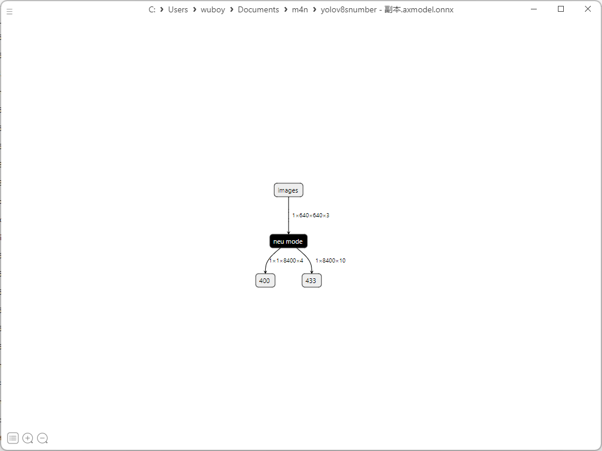
部署到开发板
开发板镜像为1.27版本，采用本地编译
下载源码：
git clone https://github.com/AXERA-TECH/ax-samples.git
修改ax_yolov8s_steps.cc文件中：
修改classname标签和类别数量
const char* CLASS_NAMES[] = {
"0", "1", "2", "3", "4", "5", "6", "7", "8", "9"};
int NUM_CLASS = 10;
cd ax-samples
mkdir build && cd build
cmake -DBSP_MSP_DIR=/soc/ -DAXERA_TARGET_CHIP=ax650 ..
make -j6
make install
编译完成后，生成的可执行示例存放在 ax-samples/build/install/ax650/ 路径下：
ax-samples/build$ tree install
install
└── ax650
├── ax_classification
├── ax_detr
├── ax_dinov2
├── ax_glpdepth
├── ax_hrnet
├── ax_imgproc
├── ax_pfld
├── ax_pp_humanseg
├── ax_pp_liteseg_stdc2_cityscapes
├── ax_pp_ocr_rec
├── ax_pp_person_attribute
├── ax_pp_vehicle_attribute
├── ax_ppyoloe
├── ax_ppyoloe_obj365
├── ax_realesrgan
├── ax_rtmdet
├── ax_scrfd
├── ax_segformer
├── ax_simcc_pose
├── ax_yolo_nas
├── ax_yolov5_face
├── ax_yolov5s
├── ax_yolov5s_seg
├── ax_yolov6
├── ax_yolov7
├── ax_yolov7_tiny_face
├── ax_yolov8
├── ax_yolov8_pose
└── ax_yolox
将axmodel模型放在可执行文件下和测试图片：
root@maixbox:/home/ax-samples/build/install/ax650# ./ax_yolov8 -m yolov8snumber.axmodel -i 1.jpg
--------------------------------------
model file : yolov8snumber.axmodel
image file : 1.jpg
img_h, img_w : 640 640
--------------------------------------
WARN,Func(__is_valid_file),NOT find file = '/etc/ax_syslog.conf'
ERROR,Func(__syslog_parma_cfg_get), NOT find = '/etc/ax_syslog.conf'
Engine creating handle is done.
Engine creating context is done.
Engine get io info is done.
Engine alloc io is done.
Engine push input is done.
--------------------------------------
post process cost time:0.49 ms
--------------------------------------
Repeat 1 times, avg time 10.92 ms, max_time 10.92 ms, min_time 10.92 ms
--------------------------------------
detection num: 4
2: 94%, [ 275, 38, 362, 168], 2
3: 94%, [ 58, 47, 145, 175], 3
1: 92%, [ 75, 250, 140, 378], 1
1: 90%, [ 288, 249, 336, 378], 1
--------------------------------------
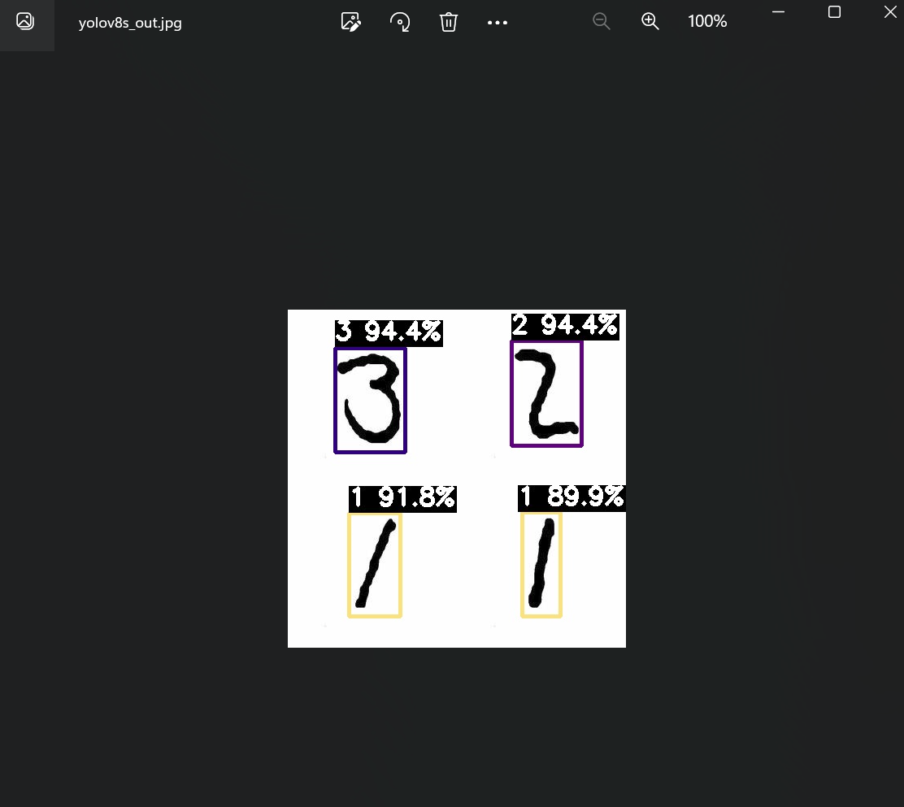